Module 1
01. 오늘 만들 결과와 진행 방식
이번에 할 일 오늘 만들 것과 자료 위치를 확인합니다.
수업은 개념(뜻과 쓰임) → 강사 시연(먼저 보기) → 직접 실습(따라 해 보기) → 심화 실습(한 가지 더 해 보기)로 이어집니다. 단원마다 필요한 단계만 담았습니다.
먼저 만들 것 · 내가 쓰는 체크리스트
“메일 확인”, “비용 정리”를 넣고 끝낸 일에 체크합니다. 닫았다 다시 열어도 남는 작은 도구를 직접 만듭니다. 그다음 회의록과 비용 보고서로 넓혀 봅니다.
- 체크리스트를 만들고 직접 눌러 봅니다.
- 회의록·비용 보고서 스킬을 만들고 다시 씁니다.
- CLAUDE.md에 나의 작업 규칙을 남깁니다.
진행 순서: 준비 → 체크리스트 → 회의록 스킬 → 비용 보고서·다음 주 재사용 → 내 규칙·보고서 스킬 → 3명 팀
완성 보고서 예시 보기 · 가상 비용 40건, 2,333,300원
추가 앱 예시는 선택 실습입니다. 오늘은 내 컴퓨터에서 쓰는 작은 도구에 집중합니다.
함께 배우고 이어 가는 곳 · 모두의연구소
모두의연구소는 AI/SW 교육과 연구 커뮤니티를 운영합니다. LAB·모두모임에서 함께 배우고, 무료 세미나 모두팝에서 새로운 주제를 만나세요. 세미나 보기
오늘 함께할 강사 · 박성훈
컬럼비아대학교 컴퓨터공학 전공 · 핀테크·웰니스 스타트업 창업 · LeanX AX 컨설턴트
- AI·바이브코딩 교육 · SK 계열사와 국세공무원 등 기업·공공기관 대상
- AI 서비스 기획·창업 교육 · 모두의연구소 재직자 과정, 패스트캠퍼스 AI PM 과정·INNER CIRCLE 멘토링
- 생성형 AI 실무 교육 · 엑셀 자동화·문서 처리·반복 업무 개선
“어디에 입력하나요?”부터 질문해 주세요. 오늘은 작은 기능부터 만들고, 실제로 실행하고, 내 업무에 다시 쓰는 과정을 함께 해 보겠습니다.
가볍게 시작하기 · 지금의 내 경험
정답을 찾는 질문이 아닙니다. 편한 질문 하나를 말로 답하거나 아래에 적어 보세요. 마지막 질문에 적은 업무는 수업을 마칠 때 다시 보겠습니다.
짧은 메모는 아래 입력칸에서 적고 복사합니다. 같은 기기·같은 브라우저에서 이 사이트를 다시 열면 이어서 쓸 수 있습니다. 다른 기기로 옮길 때는 복사하거나 내 실습 기록을 내려받습니다.
짧은 프롬프트는 화면에서 작성하고 복사합니다. 긴 스킬 내용은 텍스트 파일로 받습니다. 메모는 같은 기기·브라우저에 자동 저장됩니다.
시작 전에 가볍게
먼저 만날 말 · 업무에 빗대어 보기
이름보다 무슨 일을 할 때 쓰는지만 봅니다. 뒤에서 직접 써 볼 때 다시 연결하겠습니다.
AI 기본 개념과 짧은 역사
AI는 컴퓨터가 사람의 여러 일을 돕게 하는 큰 분야예요. 그중 머신러닝은 예시에서 규칙을 배우고, 딥러닝은 여러 층의 신경망으로 복잡한 패턴을 배웁니다. LLM은 글을 다루는 딥러닝 모델이고, Claude는 LLM을 사용하는 AI입니다.
관계는 AI ⊃ 머신러닝 ⊃ 딥러닝 ⊃ LLM입니다. 포함 관계는 분야를 쉽게 그린 그림이며, 모든 AI가 학습하는 것은 아닙니다.
고양이 사진 맞히기 · 세 가지 방법
“귀가 뾰족하고 수염이 있으면 고양이.” 사람이 조건을 정합니다. 장난감이나 다른 동물에 헷갈릴 수 있어요.
고양이·강아지 사진에 정답을 붙여 많이 보여 줍니다. 틀린 만큼 내부 수치를 조정해 구분 패턴을 배웁니다.
여러 층의 신경망이 사진의 단순한 모양부터 복합적인 특징까지 함께 익히도록 학습합니다. 큰 데이터와 계산 자원이 필요할 수 있어요.
‘층마다 귀·눈을 사람처럼 이해한다’는 뜻은 아닙니다. 사진 속 숫자 패턴을 학습한다는 비유예요. 잘 배웠어도 낯선 사진에서는 틀릴 수 있습니다.
Markdown · 글에 붙이는 간단한 표식
마크다운(.md)은 제목·목록·강조를 기호로 표시하는 글 형식입니다. 프로그래밍 언어는 아니며, 메모장에서도 읽고 고칠 수 있어요.
# 회의 메모 - 결정: 다음 주에 다시 논의 - 담당: 민수 **아직 정하지 않음:** 공개 날짜
기호가 화면에서는 이렇게 보여요
회의 메모
- 결정: 다음 주에 다시 논의
- 담당: 민수
아직 정하지 않음: 공개 날짜
#은 제목, -는 목록, **글자**는 굵게 표시합니다. 기호를 조금만 익혀도 AI가 읽을 자료를 직접 고칠 수 있습니다.
CLAUDE.md에는 AI가 지킬 규칙을, SKILL.md에는 반복 업무의 순서를 적습니다. 둘 다 Markdown이라 일반 텍스트로 읽고 고칠 수 있어요.
대표 장면으로 보는 AI의 흐름
- 1950 · 질문을 던지다앨런 튜링이 기계가 생각할 수 있는지 묻고, 대화로 판단하는 아이디어를 제안했습니다. 원 논문
- 1956 · AI라는 이름이 자리 잡다다트머스 연구 모임에서 ‘Artificial Intelligence’라는 이름을 내걸고 연구를 시작했습니다. 다트머스 자료
- 2012 · 딥러닝이 주목받다신경망이 이미지 분류에서 큰 성과를 내며 딥러닝 연구가 빠르게 확산됐습니다. AlexNet 논문
- 2017 · 트랜스포머가 나오다문장 속 단어 관계를 살피는 구조가 제안되어 오늘날 LLM 발전의 중요한 바탕이 됐습니다. 원 논문
- 2022 · 대화형 AI를 널리 경험하다ChatGPT가 공개 연구 미리보기로 출시되어 사람들이 대화로 AI를 쓰는 경험을 널리 알렸습니다. LLM 연구 자체가 이때 시작된 것은 아닙니다. OpenAI 발표
프롬프트
AI에게 건네는 말
“이 메모를 회의록으로 정리해줘.”
에이전트
목표를 받고 도구를 써서 일하는 AI
메모 읽기 → 회의록 만들기 → 확인하기
스킬 · Skill
다음에도 꺼내 쓰는 업무 설명서
“다음 회의 메모도 이 방식으로 정리해줘.”
CLAUDE.md
AI에게 늘 알려 줄 규칙을 적는 파일
“짧게 답하고, 원본은 남겨줘.”
MCP
AI와 외부 도구를 연결하는 공통 방식
Gmail을 연결해 메일 초안을 저장하기
하네스
AI가 일할 규칙·도구·확인 방법을 갖춘 환경
업무 설명서와 도구를 준비해 주기
뒤에서 나올 말도 미리 보기
터미널 · 글자로 프로그램을 켜는 창. 여기서 Claude Code를 켭니다.
코드 · 컴퓨터가 따라 할 작업 순서. AI에게 만들게 할 수 있습니다.
메타프롬프트 · “무엇이 필요한지 물어보고 프롬프트도 써줘”처럼 프롬프트 작성까지 맡기기.
바이브 코딩 · 원하는 모습을 말하고, 나온 결과를 보며 만들고 다듬기.
에이전틱 코딩 · AI에게 계획·파일 만들기·실행·확인까지 이어서 맡기기.
서브에이전트 · 일부 일을 나눠 맡는 AI 담당자. 예: 숫자 확인 담당.
스펙 · PRD · 만들 기능과 확인할 기준을 적은 문서. 예: 고객을 추가하고 다시 찾아보기.
IA · 찾기 쉽게 정보를 묶은 지도. 예: 고객 추가 / 고객 목록.
User Journey · 사용자의 행동과 마음을 시간 순서로 본 이야기. 예: 기록할까 고민 → 고객 저장 → 다음 날 찾아 안심.
API · 커넥터 · 플러그인 · API는 서비스와 정보를 주고받는 창구, 커넥터는 서비스 연결 기능, 플러그인은 기능을 더하는 묶음입니다.
컨텍스트 · 토큰 · 컨텍스트는 AI가 지금 참고하는 자료, 토큰은 글을 읽고 쓸 때 처리하는 조각입니다.
모델과 Effort · 누구에게 맡기고 얼마나 생각하게 할까?
모델은 일을 맡는 AI의 종류입니다. 화면의 선택지는 업데이트되므로 특정 번호를 외우기보다, 쉬운 일에는 빠르고 가벼운 모델, 복잡한 분석·코딩에는 성능이 높은 모델을 고릅니다. 비용·속도·품질의 균형이 달라질 수 있습니다.
Effort(생각의 깊이)는 선택한 모델이 어려운 일을 얼마나 깊게 따져볼지 정하는 설정입니다. 메뉴에 표시되는 수준과 지원 여부는 모델마다 다를 수 있습니다. 쉬운 문장 정리는 낮게, 여러 파일을 살피고 원인을 찾는 일은 높게 두면 됩니다. Effort가 높다고 사실이 자동으로 맞아지는 것은 아니므로 결과 확인은 계속 필요합니다.
| 작업 | 시작 선택 | 이유 |
|---|---|---|
| 제목·짧은 문장 다듬기 | 빠른 모델 · 낮은 Effort | 빨리 끝나는 일 |
| Excel 여러 시트 비교·오류 원인 찾기 | 성능 높은 모델 · 보통~높은 Effort | 자료를 함께 보고 추론하는 일 |
| 결과가 너무 느리거나 길 때 | Effort 한 단계 낮추기 | 필요한 만큼만 생각하게 조절 |
모델은 ‘누가 맡을지’, Effort는 ‘얼마나 꼼꼼히 생각할지’입니다. 이름과 단계는 서비스 업데이트에 따라 바뀔 수 있습니다.
Claude 채팅과 Claude Code · 참고 자료의 범위가 다릅니다
Claude 채팅은 대화창에 적거나 첨부한 자료를 중심으로 답합니다. 프로젝트 기능을 쓰면 공통 지침과 자료를 참고할 수 있지만, 각 대화의 내용이 자동으로 서로 공유되는 것은 아닙니다.
Claude Code는 먼저 지정한 실습 폴더를 작업 공간으로 삼습니다. 허용된 범위 안에서 파일을 찾아 읽고, 만들고, 명령을 실행하며 결과를 확인할 수 있습니다. 프로젝트의 CLAUDE.md는 반복 규칙, 현재 대화는 지금 할 일, Excel·메모 파일은 실제 자료라고 생각하면 됩니다.
Claude 채팅대화에 적거나 첨부한 자료를 바탕으로 설명·초안
→Claude Code지정한 폴더의 자료를 살피고 파일을 만들거나 실행해 확인
채팅과 Code가 항상 서로 다른 크기의 컨텍스트를 쓰는 것은 아닙니다. 한 번에 참고할 수 있는 양은 모델·플랜·환경에 따라 달라집니다. Code에서는 대화뿐 아니라 읽은 파일과 실행 결과도 참고 범위에 들어오므로, 필요 없는 파일을 많이 읽히면 중요한 맥락이 묻히고 사용량도 늘 수 있습니다. 채팅의 프로젝트 자료도 프로젝트 지식으로 올린 파일은 다른 대화에 참고될 수 있지만, 대화 내용 자체가 자동 공유되지는 않습니다. 그래서 색인으로 필요한 파일부터 고릅니다. 고객 개인정보·비밀번호·API 키는 실습 자료에 넣지 않습니다.
HTML · Markdown · JSON · HTML은 웹 화면, Markdown(.md)은 글 문서, JSON은 항목과 값을 짝지은 데이터입니다. 예: “건수: 41”.
Excel · 스프레드시트 · 행과 열로 자료를 정리하고 계산하는 표입니다.
Module 1
02. 터미널이 하는 일과 화면 준비
이번에 할 일 PowerShell/터미널을 열고 실습 폴더로 이동합니다.
개념 터미널은 글자로 프로그램을 켜는 창입니다. 이곳에서 Claude Code를 켜면 한국어로 파일 작업을 부탁할 수 있습니다.
Claude Code를 여는 세 가지 화면
세 화면은 Claude Code를 사용하는 서로 다른 방법입니다. VS Code 공식 안내 · Desktop Code 탭 공식 안내
1. 창 열기
Windows: 시작 메뉴에서 PowerShell 검색.
Mac: Command + Space → 터미널 검색.
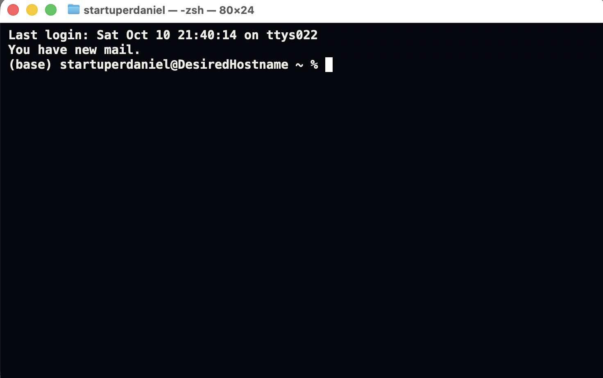
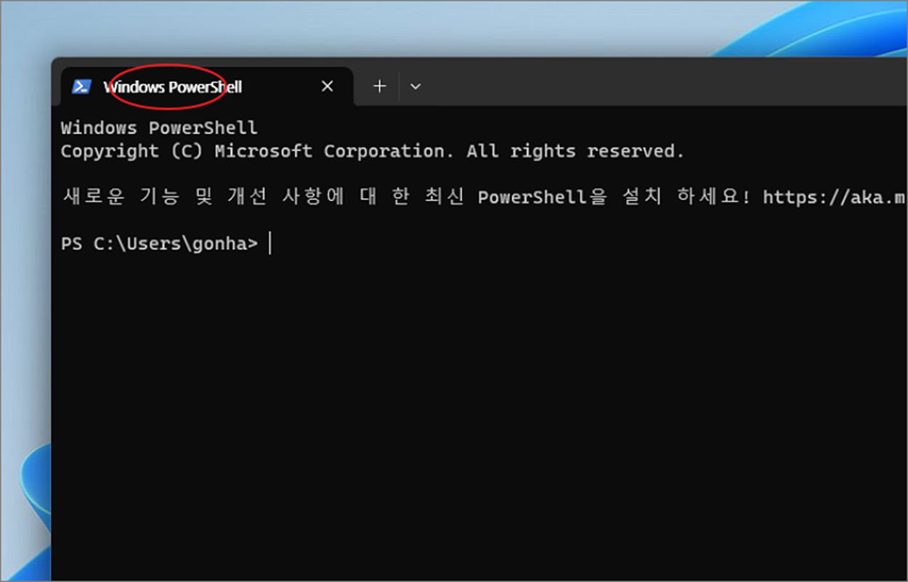
Windows · 바탕화면으로 이동
압축을 풀 파일을 바탕화면에서 찾고 싶다면 PowerShell에 아래 한 줄을 입력합니다. Windows가 실제 바탕화면 위치를 찾아 이동하므로 OneDrive로 바탕화면을 옮긴 경우에도 편합니다.
Set-Location ([Environment]::GetFolderPath('Desktop'))이동한 뒤 ZIP 파일을 바탕화면에 압축 해제하고 실습 폴더로 이동합니다.
직접 실습 2. 실습 폴더로 이동
- 다운로드한 ZIP을 바탕화면에 압축 해제합니다.
- Windows: 파일 탐색기에서 실습자료 안의 claude-work-lab 폴더를 우클릭 → 경로로 복사를 누릅니다. 안 보이면 Shift를 누른 채 우클릭합니다.
- Mac: Finder에서 claude-work-lab 폴더를 선택하고 Command + Option + C를 누릅니다.
- 복사한 경로를 아래 cd 명령에 넣습니다. 명령 속 대괄호까지 지우고 복사한 경로로 바꿉니다. 경로 양끝의 큰따옴표는 한 쌍만 남깁니다.
cd "[claude-work-lab 폴더의 전체 경로]"
pwd와 ls로 위치를 확인합니다. workbooks·templates·integrations가 보이면 맞습니다.
3. 설치 확인
처음이면 · Claude Code 설치 (이미 설치했다면 건너뛰기)
Windows와 Mac 중 내 컴퓨터에 맞는 명령 하나만 복사해 터미널에서 실행합니다. 설치가 끝나면 터미널을 새로 열고, 앞의 cd 명령으로 실습 폴더에 다시 들어갑니다.
Windows PowerShell
irm https://claude.ai/install.ps1 | iex
Windows에서 기본 설치가 안 될 때 · 설치 도우미
수업안내를 먼저 읽고 설치 파일 보기. 도우미는 Claude Code를 내려받고 사용자 PATH를 바꿀 수 있습니다. 화면의 질문을 읽고 진행하세요. 자동 동의 옵션은 쓰지 않습니다. Mac에서는 필요하지 않습니다.
macOS 터미널
curl -fsSL https://claude.ai/install.sh | bash
예외 상황 · Windows에서 설치가 막힐 때
PowerShell과 CMD를 헷갈렸거나, 설치 직후 새 터미널을 열지 않아 명령을 못 찾는 경우를 설명합니다. Windows Claude Code 설치와 오류 안내 · 브레드애미 (네이버 프리미엄, 2026-02-20)
이 글의 PowerShell 설치 방법과 오류 설명을 참고하되, 관리자 권한 안내는 현재 공식 문서와 다릅니다. 공식 문서는 일반 권한으로 설치할 수 있다고 안내합니다. 설치는 위의 최신 명령을 따르고, 오류가 나면 메시지를 강사에게 보여 주세요. 최신 Claude Code 공식 설치·문제 해결 안내
PowerShell 설치 오류가 났다면 · Claude에게 해결 방법 묻기
Claude Code가 아직 설치되지 않았다면 브라우저에서 Claude 채팅을 엽니다. 아래 프롬프트를 먼저 보내고, 다음 메시지에 PowerShell 오류를 붙여 넣습니다. 경로에 내 이름이나 비밀 정보가 보이면 가리고 붙입니다.
Claude Code 설치 중 PowerShell에서 오류가 났어. 아래 오류가 무슨 뜻인지 초보자도 알기 쉽게 설명하고, 안전하게 확인할 방법을 한 번에 한 단계씩 알려줘. 내가 붙인 오류에 없는 내용을 추측하지 말고, 파일 삭제·관리자 권한 변경·보안 설정 우회는 먼저 이유를 설명하고 내 확인을 기다려.
irm을 찾을 수 없다고 하면 PowerShell 대신 명령 프롬프트(CMD)를 연 건 아닌지 확인합니다.claude를 찾을 수 없다고 하면 터미널을 완전히 닫고 새로 열어 다시 확인합니다.- 계속 막히면 오류 그대로 공식 문제 해결 안내와 비교하거나 강사에게 보여 줍니다. 보안 설정을 끄거나 관리자 권한을 무조건 켜지 않습니다.
4. 로그인하고 Claude Code 켜기
처음 로그인할 때만 아래 순서로 진행합니다. 이미 로그인했다면 claude로 바로 켜면 됩니다.
터미널에서 로그인
claude auth login
- 열린 브라우저에서 수업에 사용할 Claude 계정으로 로그인하고 연결을 허용합니다.
- 터미널에 로그인 완료가 표시되면 아래 명령으로 Claude Code를 켭니다.
브라우저가 안 열리면 터미널에 나온 로그인 링크를 복사해 열어 주세요.
같은 터미널에서 Claude Code 켜기
claude
Claude Code가 열린 뒤에는 한국어로 부탁하면 됩니다. 다시 로그인해야 하면 Claude 안에서 /login을 입력합니다.
입력할 곳은 두 가지
Claude를 켜기 전: cd, claude 같은 명령.
Claude를 켠 뒤: 한국어 프롬프트, /model 같은 설정.
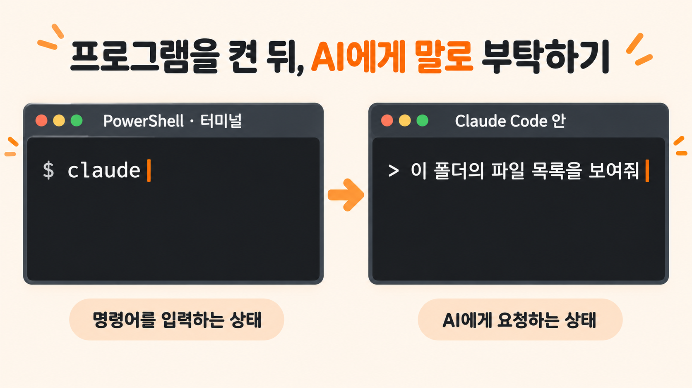
Claude를 다시 켜야 할 때
Claude 안에서 /exit를 입력해 나옵니다. 같은 터미널에서 claude를 입력하면 같은 폴더에서 다시 켜집니다.
심화 실습 더 해 보기 · 폴더 명령 연습
새 PowerShell 또는 터미널 창을 열어 연습합니다. 실습 중인 Claude 창은 그대로 둡니다.
한 줄씩 입력하고 Enter를 누릅니다. ~는 내 사용자 폴더입니다.
내 사용자 폴더로 이동
cd ~
지금 위치 보기
pwd
연습 폴더 만들기
mkdir terminal-practice
파일 목록 보기
ls
연습 폴더로 들어가기
cd terminal-practice
한 단계 위로 나오기
cd ..
Module 1
03. 내 실습 환경과 실제 응답 확인
이번에 할 일 Claude를 켜고 첫 응답을 받습니다.
직접 실습 첫 프롬프트 준비
- 앞의 로그인·실행 안내대로 Claude Code를 켭니다.
- Claude 안에서
/model(/로 시작하는 설정 명령)을 입력해 강사가 안내한 모델을 고릅니다.
텍스트 내려받기 · 01_Claude_A1_연결확인.txt
직접 실습 처음 한 번 · 자료부터 참고하도록 부탁하기
아래 프롬프트를 먼저 보냅니다. 그다음에는 하고 싶은 일을 짧게 부탁하면 됩니다. 새 대화를 시작하면 다시 보내 주세요.
먼저 @AI_참고_색인.md와 CLAUDE.md를 읽어줘. 지금 하려는 일에 필요한 자료만 골라 참고하고, 폴더 전체를 한꺼번에 읽지 마. 자료에 없는 최신 사용법은 공식 문서에서만 확인해줘. 아직 만들지 말고, 찾은 파일과 이유를 짧게 알려줘.
저장 위치는 제공 자료에서 Claude가 찾습니다. 나는 만들고 싶은 결과를 부탁하고, Claude가 알려 준 파일을 열면 됩니다.
Module 1
04. 게임부터 만들고, 프롬프트 배우기
이번에 할 일 내가 만들 도구와 완료 기준을 짧게 말합니다.
먼저 해보기 새 폴더에 테트리스 만들기
개념 설명 전에 먼저 한 번 만들어 봅니다. 아래 프롬프트를 Claude Code에 붙여 넣고, 브라우저에서 키보드로 직접 해보세요.
프롬프트 파일 · 16_테트리스_먼저만들기_P156.txt
새 폴더를 하나 만들고, 그 안에 간단한 테트리스 게임을 만들어줘. 방향키로 블록을 움직이고 회전하게 해줘. 한 줄이 차면 지우고, 다시 시작도 할 수 있게 해줘. 브라우저에서 열어 직접 해볼 수 있게 해줘.
확인: 방향키로 움직이고, 블록을 돌리고, 한 줄을 채우면 사라지는지 눌러 봅니다.
한 단계 더 새 폴더에서 인터뷰하고 다시 만들기
이번에는 내 취향을 물어보게 합니다. Claude가 먼저 물으면 답하고, 정리된 계획을 확인한 다음 제작합니다.
프롬프트 파일 · 17_테트리스_인터뷰기획_P157.txt
이번에는 새 폴더를 만들고, 내 취향의 테트리스를 만들어보고 싶어. 화면 분위기와 필요한 기능을 하나씩, 최대 3개까지 물어봐. 내 답을 짧은 계획으로 정리해 보여주고, 내가 확인하면 만들어서 브라우저에서 열어줘.
예: “짙은 남색에 민트색 블록”, “다음 블록 미리 보기”, “스페이스바로 빠르게 내리기”. 새 폴더에 만들기 때문에 첫 게임은 그대로 남습니다.
직접 해보기 재미 기능 하나 고르기
AI에게 아이디어를 받아 보고, 마음에 드는 것 하나만 골라 더해 봅니다.
프롬프트 파일 · 18_게임_재미기능고르기_P158.txt
이 게임에 더하면 재미있을 기능 3가지를 추천해줘. 각각 짧게 설명하고, 내가 하나 고르면 그 기능만 추가한 뒤 같이 확인해줘.
강사 시연 작은 카운터도 먼저 인터뷰하기
게임보다 간단한 웹페이지로 같은 기획 흐름을 연습합니다. 기능을 정해 주기 전에 AI가 질문하고 계획을 보여주게 합니다.
프롬프트 파일 · 19_카운터_인터뷰기획_P159.txt
숫자를 누르면 1씩 증가하는 웹페이지를 만들고 싶어. 나를 간단히 인터뷰해서 필요한 걸 정리해줘. 짧은 계획을 먼저 보여주고, 내가 확인하면 만들어서 브라우저에서 열어줘.
“초기화 버튼은 필요해요”, “숫자는 가운데 크게 보여주세요”처럼 답합니다. 계획을 읽고 내가 확인한 뒤에 만들게 합니다.
개념 방금 한 게 바이브 코딩입니다
AI 연구자 안드레 카파시가 2025년에 소개한 말입니다. 방금 한 것처럼 원하는 모습을 AI에게 말하고, 결과를 직접 보며 고치는 방식입니다.
예: “버튼을 누르면 숫자가 올라가게 해줘” → 실행 → “버튼을 더 크게 해줘”.
오늘은 말로 만들어 보고, 동작은 직접 눌러 확인합니다. 카파시의 설명
의도는 만들고 싶은 이유입니다. “멋진 앱”보다 “남은 일을 놓치지 않게”라고 말해 보세요. 여기에 넣을 정보와 완료 기준을 더하면 작은 기획이 됩니다.
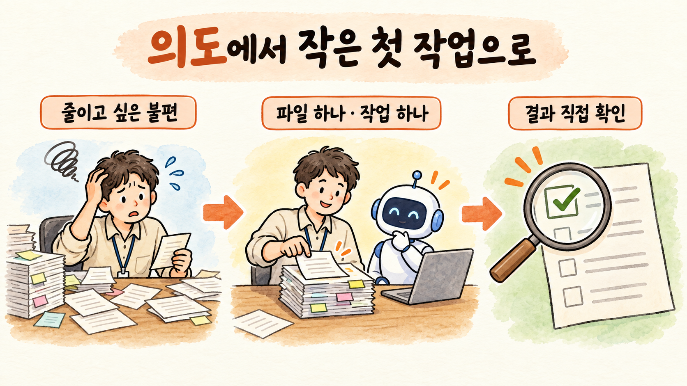
좋은 프롬프트 예시부터 볼까요?
“회의 메모를 줄게. 결정한 일과 담당자별 다음 일을 표로 정리해줘. 메모에 없는 담당자는 ‘미정’으로 두고, 빠진 내용이 없는지 원문과 비교해줘.”
- 줄 자료: 회의 메모
- 만들 것: 결정 사항과 담당자별 할 일 표
- 확인: 빠진 내용은 없는지 원문과 비교
개념 부탁할 때는 세 칸만
좋은 프롬프트는 무엇을 줄지 · 무엇을 만들지 · 어떻게 확인할지를 알려 줍니다. 위 예시처럼 업무와 확인 기준을 한두 문장으로 적으면 됩니다. 간단한 첫 시연은 만들 것만 말해도 괜찮습니다.
그런데 처음부터 세 칸을 혼자 채우기는 어렵습니다. 무엇이 필요한지 AI에게 먼저 물어보게 하고, 내 답으로 프롬프트를 써 달라고 하면 됩니다. 이 방법을 메타프롬프팅이라고 부릅니다.
파일을 참고시키려면 @를 입력하고 목록에서 파일을 고릅니다. 예: @workbooks/주간비용_실습.xlsx. 저장할 위치는 처음에는 Claude Code가 제안하도록 두어도 됩니다.
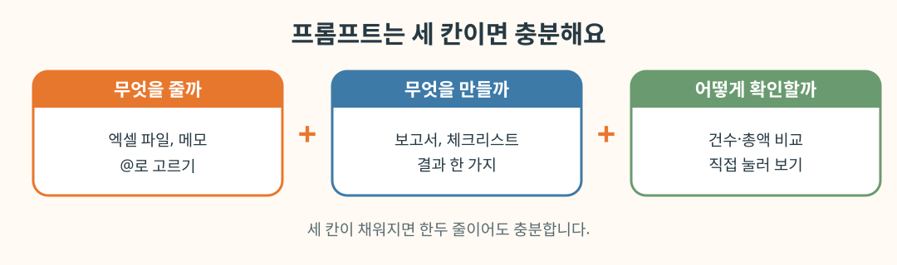
개념 프롬프트 네 가지 모양
앞으로 나오는 프롬프트는 대부분 아래 네 가지 중 하나입니다. 한 줄에 너무 많은 일을 섞지 않습니다.
- 바로 부탁하기 · 할 일이 분명할 때
“누르면 숫자가 1씩 올라가는 웹페이지를 간단하게 만들어줘.” - 물어보고 바로 만들기 · 기준을 아직 못 정했을 때
“필요한 기능을 하나씩 3개까지 물어봐 줘. 내가 고른 기능만 만들어줘.” - 프롬프트도 써 달라고 하기 (메타프롬프트) · 뭐라고 말할지 모를 때 (만들지 않고 프롬프트만 받습니다)
“필요한 걸 하나씩 물어보고, 내 답으로 짧은 프롬프트를 써줘. 아직 만들지는 마.” - 잘못됐을 때 다시 부탁하기 · 결과가 이상할 때
“방금 결과가 이상해. 어디가 잘못됐는지 확인하고 다시 만들어줘. 원본 파일은 건드리지 마.”
강사 시연 강사 시연 · 짧게 부탁하기
강사가 아래 한 줄을 시연합니다. 따라 해 보고 싶다면 Claude에 보내 보세요. 만든 뒤 “브라우저에서 열어줘”라고 부탁하고 숫자 버튼을 한 번 눌러 봅니다. 권한을 묻는 창이 뜨면 어떤 파일을 만드는지만 읽고 허용합니다. 자세한 내용은 5장 “모드와 권한”에서 봅니다.
누르면 숫자가 1씩 올라가는 웹페이지를 간단하게 만들어줘.
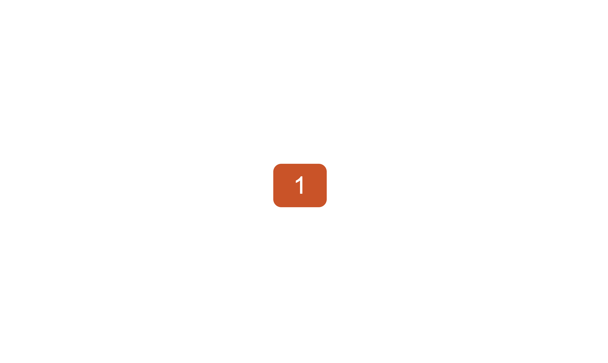
강사 시연 AI에게 먼저 물어보게 하고, 기능 하나 더하기
숫자 버튼이 동작하는 걸 확인한 뒤, 다음 기능은 AI가 질문으로 좁히게 해 봅니다. 아래 한 줄을 보내고 답을 주고받는 모습을 시연합니다.
이 카운터에 기능을 하나 더 넣고 싶어. 내가 원하는 걸 먼저 한 가지씩 물어봐 줘. 내가 고른 기능만 추가하고 화면에서 확인해줘.
Claude가 물을 수 있어요
“숫자를 0으로 되돌리는 버튼과 1씩 줄이는 버튼 중 어떤 게 필요하세요?”
강사가 답합니다
“0으로 되돌리는 버튼만 추가해줘. 눌렀을 때 숫자가 0이 되면 돼.”
함께 확인: 숫자를 몇 번 올린 뒤 초기화 버튼을 눌러 0으로 돌아오는지 봅니다. 다른 기능까지 늘어나지 않았는지도 확인합니다.
하고 싶은 일을 다 정해 두고 시작하지 않아도 됩니다. AI에게 물어보게 하고, 필요한 기능 하나만 골라도 됩니다.
재미 실습 게임 하나 만들고 화면 바꾸기
첫 게임은 규칙이 쉬운 틱택토로 시작합니다. 한 번 만들어 직접 두고, 다음 프롬프트로 디자인만 바꿔 봅니다.
프롬프트 내려받기 · 13_틱택토_만들기_P153.txt
두 사람이 번갈아 두는 틱택토 게임을 간단하게 만들어줘. 3개를 먼저 이은 사람이 이기게 하고, 비기면 알려줘. 브라우저에서 열어 직접 해볼 수 있게 해줘.
게임이 동작하면 디자인을 바꿔봅니다. 네온 아케이드·파스텔·픽셀풍 중 원하는 느낌으로 바꿔도 됩니다.
프롬프트 내려받기 · 14_게임_디자인바꾸기_P154.txt
방금 만든 틱택토를 네온 아케이드 느낌으로 꾸며줘. 게임 규칙은 그대로 두고, 바뀐 화면을 브라우저에서 확인하게 해줘.
다음 게임 아이디어: 테트리스, 장기. 규칙이 더 많으니 한 번에 전부 만들기보다 “말 움직이기부터”처럼 기능을 나눠 부탁해 보세요.
확인: 두 사람이 번갈아 둘 수 있고, 이김·비김이 맞게 표시되는지 본 뒤 디자인을 바꿔도 규칙이 그대로인지 시험합니다.
무엇을 부탁할지 막막하면 · AI에게 질문받기
직접 실습 말이 잘 안 나오면 AI에게 물어보기
프롬프트를 대신 만들어 달라고 하는 것이 메타프롬프트입니다. 제안받은 문장을 읽고 고쳐서 보내세요.
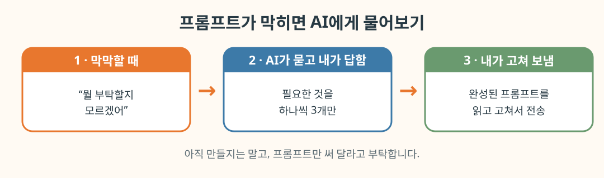
텍스트 내려받기 · 바이브_코딩_의도·기획·프롬프트_01_참고_P103.txt
내 반복 업무를 줄이고 싶어. 필요한 걸 하나씩, 3개만 물어봐 줘. 내 답으로 짧은 프롬프트를 써줘. 아직 만들지는 마.
내 업무로 바꿔 보고 싶다면 · 프롬프트 메모
직접 실습 내 의도 한 문장
예: “할 일 이름을 넣으면 목록에 남겨줘. 두 개를 추가하고 하나를 완료한 뒤, 새로고침해도 남으면 완성이야.”
예시 보기 · 할 일 관리 / 고객 관리
내 업무와 가까운 예시를 참고해 작성해 보고 복사하세요. 이미 적은 내용은 유지합니다.
할 일 관리
- 내 의도: 마감 전에 남은 일을 놓치지 않고 싶다
- 넣을 정보: 할 일 이름
- 완료 기준: 할 일 두 개 추가 → 하나 완료 → 새로고침해도 두 개와 완료 표시가 남는다
- 시연의 질문 하나와 내 답: 질문: 누가 쓰나요?
내 답: 매일 업무 마감을 챙기는 나
고객 관리
- 내 의도: 미팅한 고객과 다음 연락할 일을 잊지 않고 싶다
- 넣을 정보: 회사명·담당자·상담 상태·메모
- 완료 기준: 고객 한 명 추가 → 회사명으로 검색 → 상담 상태 변경 → 다시 열어도 기록이 남는다
- 시연의 질문 하나와 내 답: 질문: 미팅 뒤 무엇을 다시 확인하나요?
내 답: 누구에게 언제 연락할지와 약속한 내용
심화 실습 강사 참고 · 같은 버튼의 기준을 파일로 남기기
스펙은 필요한 기능과 완료 기준을 적은 문서입니다. 스펙을 먼저 읽고 만드는 방법을 Spec Driven이라고 부릅니다.
카운터 스펙은 “처음에는 0, 누르면 1씩 증가”처럼 이번 숫자 버튼의 규칙을 적은 파일입니다.
제공된 카운터 스펙을 읽고 어떻게 만들지 짧게 알려줘. 아직 만들지 마.
계획이 맞으면 다음 프롬프트를 보냅니다.
방금 정한 대로 만들어줘. 스펙대로 동작하는지 확인하고, 저장한 파일을 알려줘. 기존 파일은 남겨줘.
Module 1
05. 에이전트부터 에이전틱 코딩까지
이번에 할 일 AI가 하는 일과 내가 확인할 일을 구분합니다.
개념 에이전트 · 목표를 주면 방법을 정하고 일하는 AI
AI에게 목표를 주면, 필요한 일을 나누고 허용된 도구로 작업한 뒤 결과를 확인합니다. 이런 방식으로 일하는 AI를 에이전트라고 부릅니다. 내가 원하는 결과와 맡길 범위를 먼저 알려 줍니다. 공식 설명
① 내가 목표 정하기“숫자 버튼을 만들어줘.”
② AI가 작업하기계획 → 파일 만들기 → 동작 확인
③ 내가 결과 보기브라우저에서 버튼을 눌러 보기
업무에서도 같습니다. “이 회의 메모를 팀장용 회의록으로 정리해줘”라고 맡기면 메모를 읽고, 결정과 할 일을 정리하고, 파일로 저장하게 할 수 있습니다. 모르는 담당자나 날짜는 내가 알려 줍니다.
Claude·Cowork·Claude Code · 차이가 궁금하면
Claude는 AI와 서비스의 이름입니다. 아래는 같은 AI를 어떤 방식으로 쓸지 비교한 예시입니다.
| 이름 | 주로 맡길 일 | 회의 메모로 예를 들면 |
|---|---|---|
| Claude 일반 대화 | 질문·아이디어·문장 다듬기 | “이 메모에서 중요한 내용이 뭐야?” |
| Claude Cowork | 파일과 연결 도구를 써서 업무 결과물 만들기 | “이 메모들을 읽고 회의록 파일로 정리해줘.” |
| Claude Code | 파일·코드·명령을 다뤄 도구를 만들고 반복 실행하기 | “메모를 넣으면 같은 양식의 회의록을 만드는 도구를 만들어줘.” |
일반 대화에서도 파일을 만들 수 있습니다. 일부 계정은 Chat과 Cowork가 한 대화 화면으로 통합되어 보입니다. 이름보다 무엇을 맡기고 어떤 결과를 받을지로 고르면 됩니다. Claude·Cowork 공식 안내
이번 수업은 터미널에서 Claude Code를 사용합니다. 한국어로 부탁하면 실습 폴더에 파일을 만들고 명령을 실행하며, 내가 다시 쓸 업무 도구를 만들어 봅니다. Claude Code 공식 안내
개념 에이전틱 코딩 · 실행까지 맡기기
이 에이전트 방식으로 코드와 업무 도구를 만들고 고치는 것이 에이전틱 코딩입니다. AI가 계획 → 파일 작업 → 실행 → 확인을 이어가고, 나는 원하는 결과를 정하고 직접 써 봅니다.
예: “체크리스트를 만들고, 추가·완료·새로고침이 되는지 확인해줘.”
모드와 권한
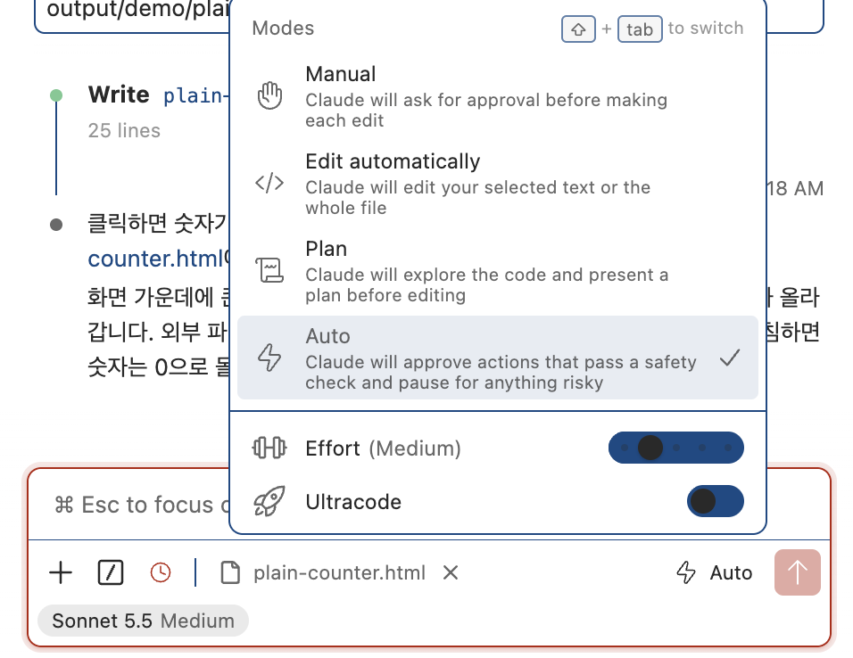
- Plan: 먼저 계획을 봅니다. 큰 변경이나 처음 하는 작업에 씁니다.
- Manual · 수동: 작업하며 필요한 권한을 묻습니다.
- Edit automatically · 편집 허용: 파일 편집을 자동으로 허용합니다. 명령 실행에는 별도 확인이 필요할 수 있습니다.
- Auto: 작업의 안전성을 자동으로 확인하고, 위험한 행동은 멈춰 확인받습니다.
Shift + Tab으로 모드를 바꿉니다. 사용 가능한 모드는 설치 버전과 계정에 따라 다를 수 있습니다. 모드 안내
처음 만들 때: Manual(수동)에서 시작해 권한 창을 읽어 봅니다. Plan에서 계획을 확인했다면, 승인 화면에서 편집을 허용해 만들기를 시작합니다.
권한 창에서는 대상 파일과 할 일을 읽습니다. 실습 폴더에 결과를 만드는 작업은 확인 후 허용하고, 원본 삭제나 메일 발송은 거절합니다.
Module 1
06. 시연 · 말로 고치고 직접 확인하기
이번에 할 일 앞에서 만든 숫자 버튼을 수정하고 동작을 확인합니다.
앞에서 만든 숫자 버튼을 그대로 고쳐 봅니다. 스펙 시연을 하지 않았어도 괜찮습니다. Claude가 알려 준 실제 파일을 엽니다.
강사 시연 1. 나만의 작은 성취 카운터 꾸미기
제목을 ‘오늘의 작은 승리’로 바꾸고 버튼은 귤색으로 해줘. 누를 때마다 숫자가 1씩 올라가는 건 그대로 둬.
직접 실습 2. 미션 하나 골라 바꾸고 눌러 보기
아래에서 마음에 드는 것 하나만 골라 Claude Code에 말해 봅니다. 모두 할 필요는 없습니다.
숫자가 5가 되면 ‘5번 해냈어요! 🎉’를 보여줘. 숫자 세기는 그대로 둬.
버튼을 누를 때 살짝 통통 튀게 해줘. 숫자는 한 번에 1씩만 올라가게 해줘.
배경을 연한 초록색으로 바꾸고 제목은 ‘천천히 하나씩’으로 해줘. 숫자 세기는 그대로 둬.
- 수정된 화면을 브라우저에서 엽니다.
- 고른 미션이 보이거나 동작하는지 확인하고, 버튼을 눌러 숫자가 1씩 올라가는지도 봅니다.
- 원하는 모습과 다르면 마음에 안 드는 부분 하나만 다시 말합니다. 새로고침 후 숫자가 0으로 돌아와도 저장 기능을 따로 넣지 않았다면 정상입니다.
‘하나만 바꾸기 → 직접 눌러 보기 → 한 번 더 다듬기’가 첫 작품을 만드는 기본 리듬입니다.
Module 2
07. 내 첫 체크리스트 만들기
이번에 할 일 추가·완료·저장이 되는 작은 도구를 만듭니다.
개념 기록은 어디에 남을까요?
index.html은 도구의 화면이고, localStorage는 이 브라우저 안에 기록을 두는 작은 서랍입니다. 인터넷 서버나 다른 기기에 자동으로 올라가지 않습니다.
화면항목을 추가해요
→브라우저 서랍이 기기에 기록해요
→다시 열기같은 브라우저에서 이어 써요
브라우저 기록을 지우면 저장 내용도 사라질 수 있습니다. 연습에는 가상 정보를 쓰고, 실제 고객 정보는 입력하지 마세요.
직접 실습 1. 부탁하기
아래 프롬프트를 Claude Code에 붙여 넣습니다.
텍스트 내려받기 · 02_Claude_A2_첫도구.txt
체크리스트 웹페이지 하나 만들어줘. 항목을 추가하고 체크하면 완료되고, 새로고침해도 남게 해줘. 간단하게 만들고 브라우저에서 열어줘.
직접 실습 2. 직접 눌러 보기
- 항목 두 개를 추가하고, 하나를 완료합니다.
- 페이지를 새로고침합니다. 같은 브라우저에서 두 항목과 완료 표시가 남아 있는지 봅니다.
완료: 새로고침해도 내가 적은 항목이 보입니다.
화면에 뜨는 것만으로는 저장이 되는지 알 수 없습니다. 직접 새로고침해 보는 이유입니다.
심화 실습 3. 디자인 참고로 화면 바꾸기
기능이 되는 체크리스트를 내가 고른 디자인 분위기로 바꿉니다. Google 이미지나 Pinterest에서 아래 문구를 검색해 화면 전체가 잘 보이는 예시 하나를 고릅니다.
to do list app web UI· 단순한 할 일 목록minimal task manager dashboard· 정돈된 업무 화면cute pastel todo app· 밝고 귀여운 화면
참고할 점을 세 가지만 골라 봅니다. 예: 색감(밝은 배경·민트 포인트), 배치(오늘 할 일을 위에), 모양(둥근 카드·큰 버튼).
화면을 캡처해 Claude Code 입력창에 넣습니다. macOS는 Shift + Command + 4로 캡처한 파일을 입력창에 끌어놓습니다. Windows는 Win + Shift + S로 캡처한 뒤 입력창에서 Alt + V를 누릅니다. 안 되면 캡처를 파일로 저장해 끌어놓습니다. 이미지 첨부 방법은 Claude Code 공식 안내에서도 볼 수 있습니다.
먼저 참고할 부분을 물어봅니다
이 디자인 이미지에서 색감, 화면 배치, 카드 모양을 쉽게 설명해줘. 체크리스트에 적용할 만한 변경 세 가지를 제안하고, 내가 고를 때까지 파일은 바꾸지 마.
제안 중 마음에 드는 방향을 고릅니다. 예: “민트색과 둥근 카드가 좋아. 오늘 할 일을 위에 보여줘.”
고른 방향으로 화면을 바꿉니다
방금 고른 디자인 방향으로 체크리스트 화면을 바꿔줘. 항목 추가·완료·새로고침 뒤 저장 기능은 그대로 둬. 참고 이미지와 로고를 그대로 쓰지 말고, 색과 모양만 반영해줘. 바꾼 뒤 브라우저에서 열어줘.
참고 이미지는 색감과 배치를 살피는 용도입니다. 이미지·로고를 완성 화면에 그대로 넣지 않습니다. 화면을 본 뒤 색이나 글자 크기처럼 한 가지만 더 다듬어 봅니다.
확인: 할 일을 하나 추가하고 완료 표시를 누른 뒤 새로고침합니다. 참고 이미지의 분위기와 기존 기능이 모두 살아 있는지 확인합니다.
Module 2
스킬을 직접 만들고 회의 메모에 적용하기
이번에 할 일 meeting-minutes 스킬을 만들고, 가상 메모를 직접 정리해 봅니다.
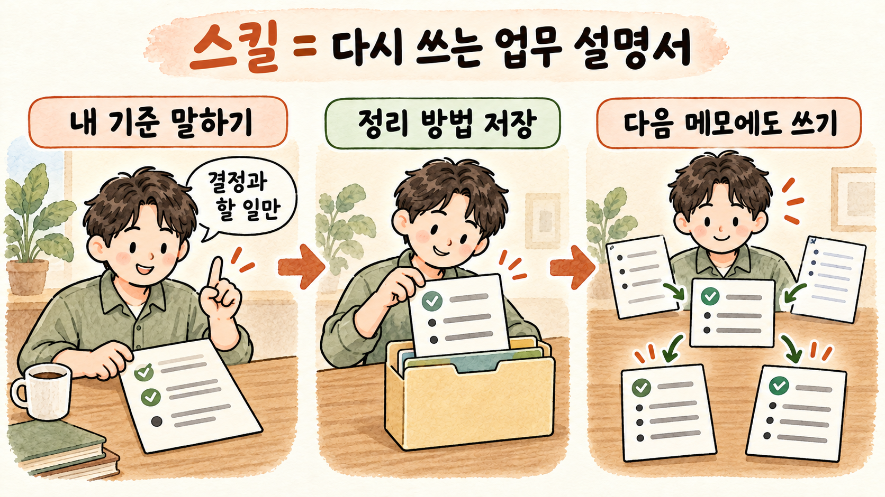
개념 1. 스킬은 반복 작업의 설명서
앞에서 본 스킬은 다시 쓰는 업무 설명서입니다. 회의록 정리 방법을 저장하고 /meeting-minutes로 불러 씁니다.
직접 실습 2. 질문에 답해 내 스킬 만들기
텍스트 내려받기 · 02b_Claude_회의록스킬인터뷰.txt
회의록 정리하는 방법을 스킬로 만들고 싶어. 내가 중요하게 보는 기준을 하나씩 물어보고, 내가 확인하면 그 기준으로 회의록 정리 스킬을 만들어줘.
답변 예: “팀장에게 보고해. 요약 두 줄, 결정 사항, 담당자별 할 일 표가 필요해.”
답변을 정리한 내용이 맞으면 “이대로 저장해줘”라고 합니다. Claude에게 “저장한 스킬 내용을 보여줘”라고 부탁해 내 기준을 읽습니다. 새 스킬이 안 보이면 같은 폴더에서 다시 켭니다.
직접 실습 3. 연습용 가상 회의 메모 만들기
실제 회의 자료가 없어도 연습할 수 있습니다. 가상 회사의 신제품 회의를 상상해 정리 전 메모를 만들고, 방금 만든 스킬에 넣어 봅니다. 예시 파일을 바로 써도 되고, 프롬프트로 나만의 메모를 만들어도 됩니다.
텍스트 내려받기 · 02e_Claude_가상회의메모만들기.txt
가상 회의 메모를 하나 만들어줘. 실습 자료의 가상 회사 배경을 참고하고, 실제 인물이나 회사 정보는 쓰지 마. 신제품 출시 회의 중 적은 메모처럼 자연스럽게 써줘. 결정된 일 2개, 담당자와 기한이 있는 할 일 2개, 아직 정하지 못한 내용 1개를 넣어줘. 정리된 회의록이 아니라 정리 전 원본 메모로 화면에 보여줘.
결과 확인: 화면에 나온 메모에 확정된 일·담당자와 기한·미정인 일이 모두 있는지 봅니다. 결과가 너무 깔끔하면 “회의 중 메모처럼 다시 써줘”라고 합니다. 파일을 만들거나 경로를 정할 필요는 없습니다.
바로 시작하고 싶다면 가상 회의 메모 예시를 열어도 됩니다.
직접 실습 4. 내 스킬로 메모 정리하기
방금 화면에 나온 메모를 /meeting-minutes 스킬로 정리합니다.
텍스트 내려받기 · 02f_Claude_가상회의록정리하기.txt
/meeting-minutes 방금 만든 가상 회의 메모를 정리해줘. 원문에 없는 내용을 보태지 말고, 결정·할 일·미정을 나눠서 보여줘.
확인: 완성된 회의록에서 제안이 확정으로 바뀌지 않았는지, 정해지지 않은 담당자와 마감일을 새로 만들지 않았는지 원문과 비교합니다.
직접 실습 5. 내 업무에 쓸 새 스킬 만들기
회의록 스킬을 써 봤으니, 이번에는 각자 자주 반복하는 일 하나를 골라 나만의 스킬을 만듭니다. 예: 매주 업무 공유, 문의 답변 초안, 콘텐츠 검수, 자료 요약. 회사 기밀이나 실제 고객 정보 대신 가상 예시를 사용합니다.
텍스트 내려받기 · 02g_Claude_내업무스킬만들기.txt
나만의 업무 스킬을 하나 만들고 싶어. 먼저 내가 자주 반복하는 일을 한 번에 하나씩 물어봐 줘. 내 답을 듣고 스킬이 할 일과 순서를 짧게 정리해 보여줘. 내가 확인하면 프로젝트에서 쓸 스킬로 저장하고, 개인정보 없는 가상 예시에 적용해줘. 스킬 이름과 부르는 방법도 알려줘.
진행: 실제로 반복하는 일을 말하고 질문에 답합니다. Claude가 정리한 스킬 내용을 확인한 뒤 저장하고, 만들어진 가상 예시로 한 번 실행합니다.
확인: /skills 목록에서 새 이름을 찾고, 그 이름으로 다시 불러 결과를 봅니다. 내 기준이 빠졌거나 답을 지어냈다면 스킬 내용을 고쳐 같은 예시로 다시 실행합니다.
직접 실습 6. 준비된 메모에도 같은 스킬 써 보기
텍스트 내려받기 · 02c_Claude_외부미팅정리.txt
/meeting-minutes @input/hanbit-sales/meetings/01_외부유통사미팅.txt를 정리해줘.
확인: 외부미팅.md를 열어 제안과 결정이 구분됐는지 봅니다.
텍스트 내려받기 · 02d_Claude_내부회의재사용.txt
/meeting-minutes @input/hanbit-sales/meetings/03_내부주간영업회의.txt도 같은 스킬로 정리해줘.
확인: 내부회의.md도 같은 형식인지 봅니다. 없는 담당자·마감일은 미정이어야 합니다.
심화 실습 예시 스킬을 내려받아 설치하기
앞에서는 내 회의록 기준으로 스킬을 만들었습니다. 이번에는 이미 작성된 짧은 .md 파일을 하나 설치하고 실제 업무 문장에 써 봅니다. 아래는 공개된 Claude 스킬 예시에서 다루는 내부 소식 정리 같은 활용을 참고해 수업용으로 만든 간단한 예제입니다. 인기 순위가 아니라, 반복 업무에 적용하기 쉬운 세 가지 예입니다. (Anthropic 공개 내부 커뮤니케이션 스킬 예시)
claude-work-lab 폴더 안으로 끌어 놓습니다.@를 누르고 옮긴 파일을 골라 설치 프롬프트를 붙입니다./skills를 입력한 뒤, 아래 예시대로 스킬을 불러봅니다.주간 업데이트
한 일·다음 할 일·막힌 점을 팀에 짧게 공유합니다.
주간 업데이트 .md 내려받기써 보기
/weekly-update 완료: 행사 페이지 공개. 다음: 문의 답변 확인. 막힘: 사진 사용 승인 대기.
확인: 완료·다음·막힘이 나뉘고, 적지 않은 사실을 만들어내지 않았는지 봅니다.
이메일 다듬기
사실을 바꾸지 않고 읽기 쉬운 업무 메일 초안을 만듭니다.
이메일 다듬기 .md 내려받기써 보기
/email-polish 목요일 회의를 금요일 3시로 바꾸는 메일을 써줘. 참석이 어려우면 다른 시간을 알려 달라고 해. 보내지는 마.
확인: 날짜와 요청이 맞고, 메일을 보내지 않고 초안만 만들었는지 봅니다.
고객 문의 나누기
정한 기준으로 문의를 분류하고 답변 초안을 준비합니다.
고객 문의 .md 내려받기써 보기
/inquiry-sort “상품이 아직 도착하지 않았어요”를 분류하고 답변 초안을 써줘. 모르는 배송 정책은 담당자 확인으로 남겨줘.
확인: 분류 이유가 설명되고, 없는 배송 약속을 만들지 않았는지 봅니다.
Claude Code에 붙일 설치 프롬프트
파일을 @로 선택한 다음 아래 프롬프트를 보냅니다. Claude가 이름·기능·저장 위치를 설명하면 확인한 뒤 “설치해줘”라고 답합니다.
첨부한 .md 파일을 읽고 이 프로젝트에서 쓸 스킬로 설치해줘. 먼저 스킬 이름, 하는 일, 저장 위치를 알려줘. 내가 확인하면 이 스킬 파일만 설치하고, 다른 파일은 바꾸지 마.
설치 후 확인: Claude가 알려 준 위치가 .claude/skills/스킬이름/SKILL.md인지 봅니다. .claude/skills는 이 실습 폴더에서만 쓰는 프로젝트용 보관함입니다. /skills 목록에 이름이 보이면 위 예시에서 같은 이름의 /스킬이름을 입력해 실행합니다.
파일이 보이지 않으면 Claude Code에서 @를 눌렀을 때 현재 실습 폴더가 열렸는지 확인합니다. 필요하면 다운로드 파일을 claude-work-lab 안으로 옮기세요.
형식·저장 위치 근거: Claude Code 스킬 공식 안내. Claude Code 프로젝트 스킬은 .claude/skills 안에 두고 /이름으로 직접 실행할 수 있습니다.
스킬 파일이 어떻게 생겼는지 궁금하면
- name: 부를 이름. 예: meeting-minutes
- description: 언제 무슨 일을 하는지. 예: 영업 미팅 메모를 회의록으로 정리할 때 사용
- 본문: 정리할 순서와 규칙. 예: 요약 → 결정 → 할 일 표, 없는 정보는 미정
스킬 카드 · 이름과 설명을 눌러 보기
name: meeting-minutes description: 회의 메모를 결정 사항과 할 일 표로 정리할 때 본문: 원문 읽기 → 결정·제안 구분 → 회의록 작성 → 원문 대조
name은 부를 이름, description은 언제 어떤 일을 맡기는지, 본문은 따라 할 절차입니다.
Module 2
08. 고객관리 서비스 설계하고 만들기
이번에 할 일 고객을 기록하고 다음 연락을 챙기는 작은 웹 도구를 만듭니다.
개념 한 가지 업무를 세 각도에서 보기
같은 고객 도구를 세 각도에서 정리합니다. PRD는 누구의 어떤 문제를 이번에 어디까지 해결할지와 완료 기준, IA는 화면과 정보가 어디에 놓일지, User Journey는 사용자가 언제 무엇을 하고 어디서 막히는지를 보여줍니다. 어려운 문서를 혼자 쓰기보다, AI와 대화하며 한 장씩 구체화합니다.
영업 담당자가 미팅 뒤 후속 연락을 놓치지 않게 고객을 기록하고 검색한다.
이번 범위: 고객 추가·검색·연락 상태 / 확인: 입력한 고객을 다시 찾는다고객 목록 화면에 검색 칸과 고객 추가 버튼을 두고, 각 고객에 이름·회사·다음 할 일을 묶는다.
사용자가 정보를 어디서 찾고 무엇을 입력하는지 정한다미팅 직후 기록 → 다음 날 검색 → 연락 상태와 다음 할 일 확인.
각 순간의 행동·생각·막힘·원하는 결과를 따라간다이번 실습은 문제 인터뷰 → IA → User Journey → PRD → 작은 앱 순서입니다. 먼저 필요한 정보를 모으고, 화면을 정한 뒤, 실제 사용 흐름을 살펴보고, 마지막에 만들 범위와 완료 기준을 합의합니다.
예시 보기 같은 고객 도구의 실제 기획 자료
한 고객 도구를 세 장으로 봅니다. 문제 인터뷰 → IA → User Journey → PRD 순서로 진행하되, 아래 버튼으로는 각 문서가 무엇을 정하는지 비교해 보세요. 이번 실습은 B2B IT SaaS 영업 상황입니다.
사용자와 문제: 영업 담당자가 미팅 뒤 다음 연락을 놓친다. 이번에 만들 것: 고객 추가·검색·연락 상태. 이번에는 미룰 것: 팀 공유·자동 알림. 완료 확인: 가상 고객을 추가한 뒤 이름으로 다시 찾는다.
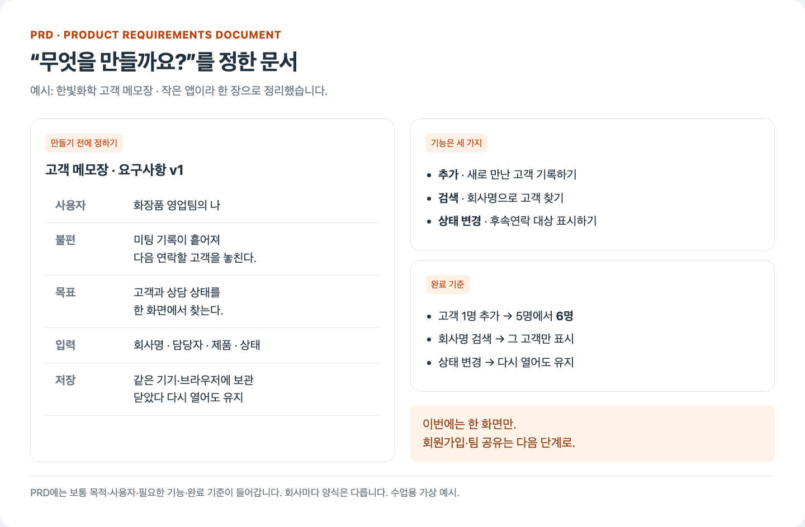
화면과 정보 묶음: 고객 목록 화면에 검색 칸과 고객 추가 버튼을 둡니다. 고객 한 명의 이름·회사·연락처·다음 할 일은 한 묶음으로 보여줍니다. 메뉴를 늘리기 전에 자주 찾을 정보를 먼저 배치합니다.
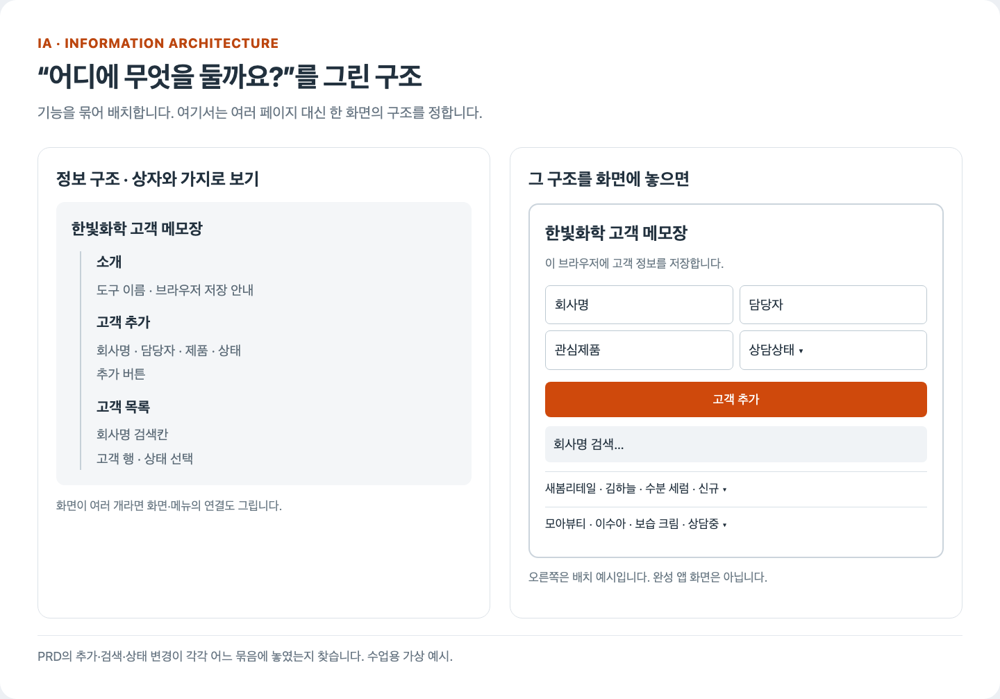
상황과 행동: 미팅 직후 도구를 연다 → 고객과 다음 할 일을 적는다 → 저장됐다는 표시를 확인한다 → 다음 날 이름을 검색한다 → 연락 상태를 보고 후속 연락을 한다. “빠뜨릴까 걱정”에서 “다음 할 일을 찾았다”로 바뀌는지도 살핍니다.
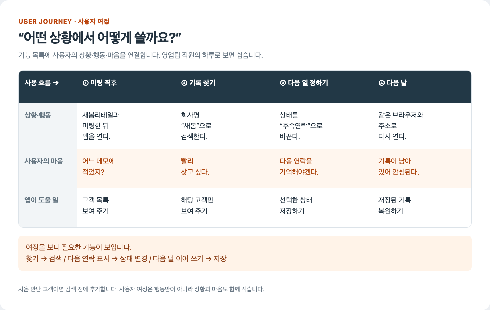
강사 시연 미팅 후 할 일 보드 만들기
먼저 작은 업무 앱 하나를 함께 만듭니다. 고객 이름·다음 할 일·날짜를 적고 완료 표시하는 화면입니다. 코드는 직접 쓰지 않고 Claude Code에 말로 부탁합니다.
시연 프롬프트
미팅 후 할 일을 적는 간단한 업무 페이지를 만들어줘. 고객 이름, 다음 할 일, 날짜를 적고 완료 표시도 할 수 있게 해줘. 새로고침해도 남게 만들고 브라우저에서 열어줘.
- 강사가 프롬프트를 입력하고, Claude가 만든 화면을 엽니다.
- 가상 고객과 다음 할 일을 하나 적고 완료 표시를 눌러 봅니다.
- 새로고침한 뒤에도 기록이 남는지 함께 확인합니다.
시연에서 볼 것: 말로 만들기 → 화면에서 써 보기 → 새로고침으로 저장 확인. 이 세 단계면 작은 업무 도구의 첫 버전입니다.
직접 실습 고객관리 도구 문제 인터뷰와 기획
B2B IT SaaS 세일즈에서 반복되는 불편을 인터뷰로 정리합니다. 문제 정의 → IA → User Journey → PRD 순서로 진행하고, 각 단계마다 확인·승인한 뒤 다음 단계로 넘어갑니다. 실제 고객 정보는 쓰지 않습니다. 최종안에는 같은 PC 브라우저 안에서만 쓰고 저장하는 조건을 담습니다.
프롬프트 텍스트 내려받기 · 04b_Claude_고객관리앱.txt
나는 B2B IT SaaS를 세일즈하고 있어. 고객 정보와 미팅 내용이 수첩·이메일·카카오톡에 흩어져 있어 후속 연락을 놓치거나 상담 맥락을 다시 찾기 어려워. 이 문제를 해결할 고객관리 도구를 설계하고 싶어. 실제 고객 정보는 쓰지 말고, 먼저 내 업무에서 불편한 순간과 필요한 결과를 한 번에 하나씩 물어봐 줘. 이미 말한 내용은 다시 묻지 말고, 필요한 질문은 최대 5개로 해줘. 인터뷰 후 해결할 문제와 사용자를 쉬운 말로 요약해 확인받아. 내가 확인하면 IA 초안(화면에 어떤 정보를 어떻게 모을지)을 보여주고 승인받아. IA를 승인한 뒤에만 User Journey(언제 열어 무엇을 하고 어떤 결과를 얻는지)를 만들고 다시 승인받아. 그다음 PRD(만들 목표, 필요한 기능, 완료 기준)를 작성해 확인받아. 매 단계에서 모르는 내용은 추측하지 말고 물어봐 줘. 최종 도구는 로컬 전용으로, 인터넷 서버·클라우드·로그인·외부 연동 없이 이 PC의 브라우저에서만 쓰게 해줘. 데이터는 같은 브라우저에 저장하고 가상 자료만 사용해. IA·User Journey·PRD를 차례로 승인받기 전에는 코드를 만들지 말고, PRD까지 승인받은 뒤에만 한 화면의 작은 웹앱을 만들어 새로고침 뒤에도 기록이 남는지 확인해줘.
인터뷰 → IA → User Journey → PRD → 앱 제작 순서로 진행합니다. 각 문서를 확인하고 승인한 뒤 다음 단계로 넘어갑니다. 로컬 저장은 같은 브라우저·기기에서만 이어지고, 다른 사람과 자동 공유되지 않습니다.
제작 사례 영업 딜 관리 도구를 브라우저에서 확인하기
실제 사례에서는 기획을 마친 뒤 Vite 프로젝트 폴더에서 Claude Code를 열고 개발 서버를 실행해 화면을 확인했습니다. 처음 폴더를 열 때 신뢰 여부를 묻는 화면이 나오면 내가 만들었거나 신뢰하는 폴더인지 확인한 뒤 진행합니다. 아래 명령은 package.json에 개발 서버 실행 방법이 준비된 프로젝트에서만 씁니다.
- 실습 프로젝트 폴더에서 Claude Code를 엽니다.
- 터미널에
npm run dev를 입력합니다. 이 프로젝트는 화면과 서버를 함께 켰습니다. 화면 주소는http://localhost:5173, 서버 주소는http://localhost:5174였습니다.localhost는 내 컴퓨터에서 여는 주소입니다. - Claude Code에 자연어로 수정할 점을 하나씩 말합니다. 화면 파일이 바뀌면 브라우저가 자동으로 갱신되므로 결과를 보고 다음 프롬프트를 정합니다.
- 완성한 파일은
output/deal-tracker/index.html이었고, 영업 딜 관리 화면에 가상 거래 9건이 들어 있었습니다. 보고서 복사와 JSON 내보내기를 직접 눌러 확인합니다. 당시 제작 기록에서는 이 두 기능을 끝까지 검증하지 않았으므로 성공을 가정하지 않습니다.
실습 흐름: 프로젝트 폴더 열기 → 서버 켜기 → 화면 보기 → 한 가지씩 수정 → 직접 눌러 확인하기. 실제 고객 정보 대신 가상 자료를 사용합니다. localhost에서 화면이 열린다는 사실만으로 앱이 완전히 오프라인이거나 AI 통신도 로컬이라고 단정할 수는 없습니다.
심화 실습 인터뷰로 기능 하나 더 고치기
앱을 써 보고 불편한 점 하나만 고릅니다. 처음부터 기능을 짐작해 넣기보다, AI가 상황을 물어보게 합니다.
텍스트 내려받기 · 04c_Claude_고객메모추가.txt
고객관리 도구를 써 보니 불편한 점이 있어. 내가 어떤 상황에서 막히는지 한 번에 하나씩 물어봐 줘. 답을 듣고 고칠 기능 하나를 제안해줘. 내가 확인하면 기존 고객 기록을 남긴 채 고치고, 직접 시험해 볼 방법도 알려줘.
심화 실습 내 재무상태표 분석 앱 기획하고 만들기
고객관리 예시와 다른 업무에도 같은 순서를 씁니다. 먼저 인터뷰하고 IA → User Journey → PRD를 확인한 뒤, 승인한 범위로 Electron 앱을 만듭니다.
재무 앱 기획 예시 내려받기 · PRD·IA·User Journey
프롬프트 내려받기 · 12_Claude_재무상태표분석앱_P151.txt
재무상태표 파일을 넣으면 유동성 분석을 보여주는 작은 앱을 만들고 싶어. 먼저 꼭 필요한 것만 한 번에 하나씩, 최대 3개 질문해줘. 답을 바탕으로 IA → User Journey → PRD를 차례로 만들고, 각 단계마다 내 확인을 기다려. 모두 확인되면 Electron으로 작게 만들어줘. 결과는 핵심 3줄, 유동성 지표 그래프, 초록·노랑·빨강 신호로 보여줘. 계산식과 신호 기준은 화면에서 확인하고 바꿀 수 있게 해줘. 선택한 파일 내용이 로그인된 Claude Code를 통해 Claude에 전달되는지 코딩 전에 쉽게 설명하고 내 확인을 받아. API 키나 외부 서버는 추가하지 말고, 가짜 6개월 자료로 시험해줘. 신호는 참고용이며 투자·대출 판단처럼 단정하지 마.
확인: IA·User Journey·PRD를 각각 확인한 뒤에만 코드를 시작합니다. 파일 내용이 Claude에 전달되는 범위를 확인하고, 수업에서는 가짜 자료로 분석·그래프·신호 기준을 시험합니다. Electron 화면은 이 PC에서 실행되지만 Claude CLI 분석에 파일 내용이 전달되면 Claude 서비스에서 처리될 수 있습니다. 신호등은 참고용이며 재무·투자 판단이 아닙니다.
Module 2
09. 앱 파일과 기록이 남는 곳 확인
이번에 할 일 화면 파일과 브라우저 기록이 각각 어디에 있는지 확인합니다.
화면이 열리는 것만으로는 고객 정보가 저장되는지 알 수 없습니다. 가상 고객을 하나 추가하고 새로고침해, 다음에도 이어 쓸 수 있는지 확인합니다.
index.html화면을 만드는 파일
≠브라우저 기록추가한 고객 정보
- 앱에서 연습용 고객 한 명을 추가합니다.
- 페이지를 새로고침하고 고객이 남아 있는지 확인합니다.
- 같은 브라우저에서 앱을 다시 열어 한 번 더 확인합니다.
알아둘 점: HTML 파일 사본만 복사해도 브라우저에 저장한 고객 기록은 따라오지 않습니다. 이 방식은 같은 브라우저 안에서 연습할 때 씁니다. 브라우저 데이터를 지우면 기록도 사라질 수 있으니 실제 고객 정보를 넣지 마세요.
Module 2
10. 비용 보고서의 입력과 완성 예시
이번에 할 일 비용표와 보고서 숫자를 확인합니다.
비용표는 비용내역 탭의 한 행이 한 건입니다. 먼저 아래 예시로 모양을 보고, 실제 제작에서는 제공된 수정후 비용표를 사용합니다.
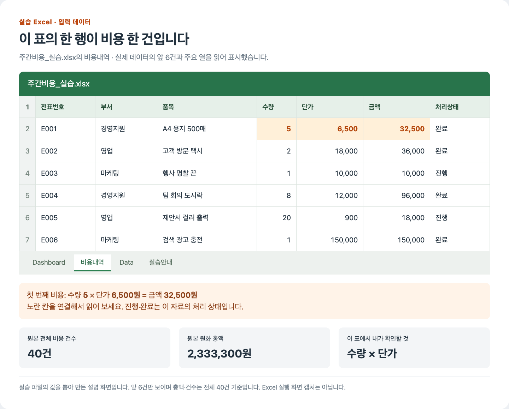
- 금액: 수량 × 단가, 단위는 원.
- 처리상태: 진행 또는 완료. 완료가 결제 완료라는 뜻은 아닙니다.
- 해외 USD: 참고용이며 원화 합계에 더하지 않습니다.
실습 원본: 40건·2,333,300원. 이번에 만들 보고서의 입력(수정후 비용표): 41건·2,363,300원. 원본 보고서 예시는 모양 참고용입니다.
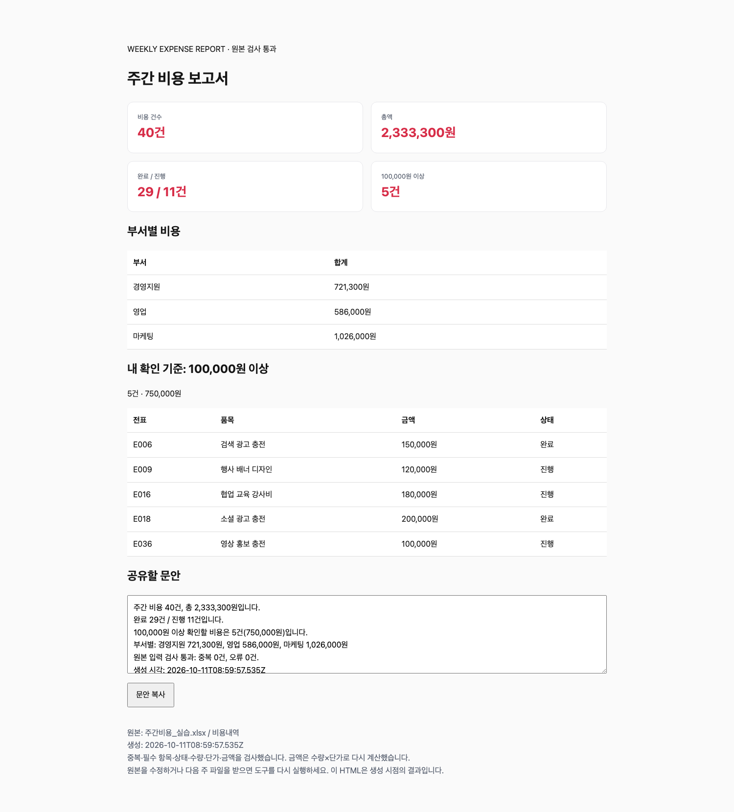
개념 내 업무로 바꾸려면
누가 쓰는지, 줄 자료, 원하는 결과, 처음 할 작업을 평소 말로 적어보세요.
예: “저는 영업팀에서 주간 비용을 보고해요. 먼저 Excel 한 개의 건수와 총액만 보고서로 만들고 싶어요.”
선택 · 프롬프트 작성해 보기
텍스트 내려받기 · 04a_Claude_내업무_메타프롬프트.txt
내가 줄이고 싶은 업무: [평소 하던 일] 이 중에서 처음 해 볼 작은 작업 하나를 같이 골라줘. 필요한 것을 물어보고, 내 답으로 짧은 프롬프트를 만들어줘.
Module 2
11. 보고서와 공유 문안 만들기
이번에 할 일 보고서와 공유 문안을 남깁니다.
직접 실습 보고서 만들기
제공된 수정후 비용표로 보고서와 메일 초안을 함께 만듭니다.
처음에 계산 도구 설치가 필요하다고 나오면 “이 보고서를 만들 수 있게 준비를 도와줘”라고 부탁합니다. Node.js는 계산 도구를 실행하는 프로그램입니다. 설치 안내를 보고 진행하세요.
텍스트 내려받기 · 보고서와_공유_문안_만들기_01_Claude_P69.txt
@workbooks/주간비용_수정후.xlsx를 보고, @workbooks/파일안내.md도 참고해서 주간 비용 보고서를 만들어줘. 총액과 건수, 부서별 비용을 정리하고 마크다운과 메일 초안도 만들어줘. 계산은 제공 도구를 쓰고, 메일은 보내지 마.
열어 볼 결과: 보고서 화면, 마크다운 보고서, 메일 초안. Claude가 알려 준 파일을 엽니다.
확인: 41건·2,363,300원. 경영지원 721,300원, 영업 586,000원, 마케팅 1,056,000원입니다.
메일 초안은 내용을 읽고 확인합니다. 이 단계에서는 보내지 않습니다.
결과가 이상할 때만 · 다시 부탁하기
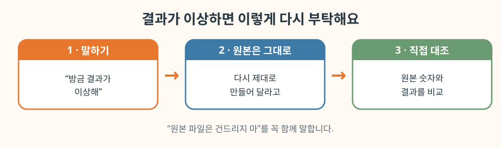
텍스트 내려받기 · 10_Claude_오류하나수정.txt
방금 결과가 이상해. 어디가 잘못됐는지 확인하고 다시 제대로 만들어줘. 원본 파일은 건드리지 마.
심화 실습 선택 · 같은 자료를 보고서·화면·요약·메일·CSV로 바꾸기
자료 4개에는 이번 주 수치, 보고 기준, 지난주 보고서, 이번 주 메모가 있습니다. 받는 사람에 맞춰 형태를 바꿉니다.
텍스트 내려받기 · 04d_Claude_보고서 5종.txt
@input/weekly-report/README.md를 보고 연결된 주간 자료로 보고서를 만들어줘. 팀장용 보고서, 대시보드, 팀 요약, 메일 초안, 차트 데이터 다섯 가지야. 숫자가 비용 보고서와 같은지 확인해줘. 원인 추정은 따로 표시하고, 메일은 보내지 마.
파일 다섯 개를 열어 총액이 같은지 봅니다. 지난주보다 1건·30,000원 증가했는지도 확인합니다.
텍스트 내려받기 · 04e_Claude_보고서부분수정.txt
방금 만든 팀장용 보고서의 다음 행동만 담당자·할 일·날짜 표로 바꿔줘. 모르는 것은 미정으로 쓰고, 숫자는 그대로 둬.
Module 2
12. 같은 방법으로 다음 주 보고서 만들기
이번에 할 일 입력 파일만 바꾸어 보고서를 다시 만듭니다.
직접 실습 지난번 방식으로 새 파일을 처리해 달라고 부탁합니다.
텍스트 내려받기 · 07_Claude_A6_다음주.txt
지난번에 만든 방식으로 @workbooks/주간비용_다음주.xlsx 보고서를 만들어줘. @workbooks/파일안내.md도 참고해서 달라진 부분과 총액·건수만 알려줘. 이전 보고서는 남겨줘.
확인: output/next-week/report.html에서 12건·1,130,900원을 봅니다. 기존 결과는 이전 폴더에 남아 있습니다.
심화 실습 여러 Excel을 한 페이지 보고서로 비교하기
각 Excel은 서로 다른 기준입니다. 이번 주 원본과 수정 사본은 변화 비교에 쓰고, 다음 주 자료는 따로 보여 줍니다. 세 파일 금액을 한데 더하지 않습니다.
텍스트 내려받기 · 여러_Excel_한페이지_보고서.txt
@workbooks/주간비용_실습.xlsx, @workbooks/주간비용_수정후.xlsx, @workbooks/주간비용_다음주.xlsx를 한 페이지 보고서로 비교해줘. 각 파일의 건수와 합계를 따로 보여줘. 원본과 수정후의 변화만 비교하고 다음 주는 별도로 표시해. 세 파일을 합산하지 말고 그래프도 하나 넣어줘.
브라우저에서 보고서와 그래프를 엽니다. 원본→수정후는 40→41건, 2,333,300→2,363,300원입니다. 다음 주는 12건·1,130,900원입니다.
Module 2
13. 선택 · Excel 금액 바꿔 보기
이번에 할 일 Excel 사본을 바꾸고 보고서 숫자 변화를 봅니다.
숫자 하나 바꾸면 보고서는 어떻게 달라질까요?
앞의 보고서 만들기와 다음 주 재사용을 마쳤다면 해 보세요. 실습 원본의 사본을 바꾸며 숫자가 달라지는 모습을 확인합니다. 원래 파일과 앞서 만든 보고서는 남깁니다.
직접 실습 1. Excel에서 금액 바꾸기
파일 탐색기 또는 Finder에서 workbooks/주간비용_실습.xlsx를 복사해 같은 폴더에 내주간비용.xlsx로 저장합니다. 복사본을 Excel에서 열고 전표번호 E003을 찾습니다. 단가를 10,000원에서 15,000원으로 바꾸고 저장합니다. 금액 칸은 수량×단가 수식으로 자동 계산됩니다.
텍스트 내려받기 · 내_Excel_사본_수정·추가_01_Claude_P67.txt
@workbooks/내주간비용.xlsx로 보고서를 다시 만들어줘. 바꾼 금액이 반영됐는지 봐줘.
Claude가 알려 준 보고서를 엽니다. 40건·2,338,300원이면 됩니다. 총액이 5,000원 늘었습니다.
직접 실습 2. Excel에서 한 줄 추가하기
마지막 비용 행을 복사해 바로 아래에 붙입니다. 전표번호를 E041로, 품목을 행사 안내 카드로, 수량을 1, 단가를 25,000원으로 바꿉니다. 금액은 수식이 계산하도록 두고 저장합니다.
| 전표번호 | 수량 | 단가 | 금액 |
|---|---|---|---|
| E041 | 1 | 25,000 | 25,000 |
나머지 칸은 복사한 내용을 그대로 둡니다.
텍스트 내려받기 · 내_Excel_사본_수정·추가_02_Claude_P68.txt
비용 한 건을 추가한 @workbooks/내주간비용.xlsx로 다시 만들어줘. 건수와 총액이 얼마나 바뀌었는지 알려줘.
41건·2,363,300원인지 봅니다. 다음 실습에서는 제공된 주간비용_수정후.xlsx를 사용합니다.
심화 실습 120건 표에서 찾아 바꾸기
workbooks/주간비용_확장연습_120건.xlsx를 복사해 내주간비용_120건.xlsx로 저장하고 Excel에서 엽니다. 120건의 가상 기록입니다. 머리글 필터로 부서나 처리상태를 골라 보고, 원본 기준 120건·20,168,700원을 확인합니다.
전표번호 X001의 단가를 1,800원에서 2,800원으로 바꾸고 저장합니다.
텍스트 내려받기 · 확장_Excel_120건_보고서.txt
@workbooks/내주간비용_120건.xlsx로 보고서를 만들어줘. 건수·총액·부서별 합계를 알려주고, 바꾼 금액이 반영됐는지 확인해줘.
예상 결과는 120건·20,169,700원입니다. 총액이 1,000원 늘어야 합니다.
Module 2
14. 선택 · 내 지출로 보고서 만들기
이번에 할 일 쓴 돈을 말로 알려주고 비용표와 보고서를 만듭니다.
내가 쓴 돈 세 가지로 해 보기
쓴 돈 세 가지를 떠올려 보세요. 가상 금액도 괜찮습니다.
직접 실습 1. 쓴 돈 알려주기
프롬프트를 보내고 Claude의 질문에 답합니다.
답변 예시: “커피 4,000원, 점심 10,000원, 버스 1,500원 썼어.”
텍스트 내려받기 · 04a_Claude_내업무실행기.txt
내 지출 세 가지로 간단한 보고서를 만들고 싶어. 무엇에 얼마를 썼는지 하나씩 물어봐 줘. 내 답으로 비용표와 합계가 보이는 보고서를 만들어줘.
보고서를 열어 확인합니다. 예시대로라면 3건·15,500원입니다.
직접 실습 2. 금액 하나 바꿔 보기
“커피를 5,000원으로 바꿔줘.” 합계가 1,000원 늘었는지 봅니다.
방금 비용 중 하나를 바꾸고 싶어. 무엇을 얼마로 바꿀지 물어보고 보고서도 다시 만들어줘.
심화 실습 더 해 보기 · 큰 지출 표시하기
텍스트 내려받기 · 내_데이터로_업무_자동화_스크립트_완성_01_Claude_P79.txt
방금 만든 보고서에서 5,000원 이상 쓴 비용을 눈에 띄게 표시해줘. 전체 건수와 총액은 그대로 두고 보여주는 방식만 바꿔줘.
Module 2
15. 내 업무 메모에 첫 결과 남기기
이번에 할 일 다음에 해 볼 작은 작업을 정합니다.
직접 실습 오늘 만든 보고서를 다시 열어봅니다. 내 업무에 쓴다면 무엇을 바꿀지 한 가지만 적습니다.
예: “다음에는 우리 팀 비용 파일 하나로 같은 보고서를 만들고 싶다.”
아이디어 내 직무에 맞는 실습 주제 고르기
아래는 출발 아이디어입니다. 수업의 실습 방식 중 내 일과 가까운 것을 골라 작은 예제로 바꿔 봅니다. 실제 회사 자료 대신 가상 자료나 공개 자료를 사용합니다.
| 직무 | 해 볼 만한 업무 | 어울리는 실습 |
|---|---|---|
| 재경·회계 | 비용·예산·재무상태표 비교, 월간 보고서 | Excel 분석 → 보고서·슬라이드, 로컬 Work OS |
| 생산·품질관리 | 생산량·불량·점검 기록에서 변화 찾기 | Excel 그래프·요약, 확인·작성·검수 에이전트 팀 |
| 연구·R&D | 논문·실험 기록 비교, 주간 연구 요약 | 자료 조사 스킬, 조사·비교·검수 에이전트 팀 |
| 영업 | 미팅 메모·영업 기회·다음 연락 정리 | 회의록 스킬, 고객 Work OS, 조사·후속·검수 팀 |
| 마케팅 | 캠페인 성과·콘텐츠 일정·웨비나 홍보 | Excel 분석, 조사→기획→작성→검수 팀 |
| 인사·HR | 온보딩 안내·교육 운영·반복 질문 모음 | FAQ 스킬, 교육 준비 Work OS, 초안·검수 팀 |
AI로 기존 일을 줄이고, 새 일을 가능하게 하기
예: 매주 Excel 비용표를 읽어 보고서를 만드는 시간을 줄인다.
예: 시간이 없어 못 하던 고객별 후속 제안이나 맞춤 분석을 제공한다.
먼저 작은 반복 업무를 줄여 AI를 익힌 뒤, “시간이 크게 줄면 고객이나 동료에게 새로 해 줄 수 있는 일은?”을 생각해 봅니다.
팀 전체로 넓힐 때 참고 · CODER
Reforge 글에서 소개한 AI 도입 프레임워크입니다. 외울 용어가 아니라 팀의 준비 상태를 점검하는 다섯 질문으로 봅니다.
| 항목 | 쉽게 말하면 | 팀에 물어볼 질문 |
|---|---|---|
| C · Constraints | 새 방법을 쉽게 시작하도록 환경과 경계를 마련 | 안전하게 써 볼 도구·자료·시간이 준비됐나? |
| O · Ownership | 진행을 맡고 막힌 점을 풀 담당자 | 누가 작은 실험을 챙기나? |
| D · Directives | 바로 해 볼 구체적인 첫 행동 | 이번 주 어떤 업무 하나를 시험하나? |
| E · Expectations | 잘 됐는지 볼 수 있는 기준 | 시간·정확도·사용자 반응 중 무엇을 확인하나? |
| R · Rewards | 성과와 배움을 알아주고 공유 | 효과가 있으면 누구와 어떻게 나누나? |
한 사람의 실습에서는 ‘작은 업무 하나·확인 기준 하나’부터 정하면 충분합니다. 출처: Reforge, The CODER Framework: How To Become AI-Native.
수업 도구와 연결: Excel은 숫자·변화를 살피고, 스킬은 반복 절차를 저장하며, 서브에이전트는 역할을 나눕니다. 로컬 Work OS는 내 PC에서 쓰는 간단한 업무 도구입니다. 루틴은 반복 시각에 일을 실행합니다(계정에서 지원할 때).
막막하면 아래 프롬프트를 보내고, 직무와 자주 하는 일을 알려준 뒤 가장 쉬운 주제를 하나 고릅니다.
프롬프트 내려받기 · 15_내직무_실습주제고르기_P155.txt
내 직무와 자주 하는 일을 알려줄게. 따라 해 볼 실습 주제 3개를 골라줘. 각 주제마다 넣을 자료, 만들 결과, 어울리는 방식(Excel 분석·반복 업무 스킬·서브에이전트 팀·로컬 Work OS·반복 실행)을 한 줄로 설명해줘. 너무 큰 주제는 빼고 가장 쉬운 것부터 추천해줘.
Module 3
16. 반복 설명을 CLAUDE.md에 남기기
이번에 할 일 이 프로젝트에서 반복할 규칙을 CLAUDE.md에 남깁니다.
개념 반복할 규칙은 CLAUDE.md에
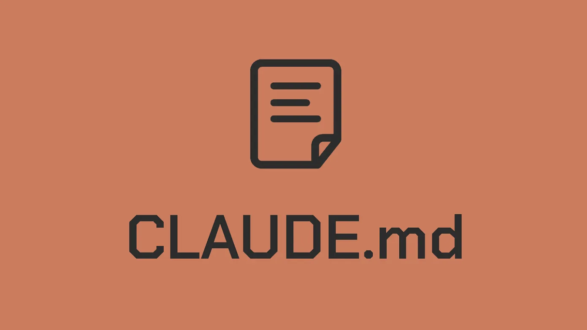
앞에서 본 하네스는 AI가 일할 환경입니다. 이번에는 그중 반복해서 지킬 규칙을 CLAUDE.md에 적습니다.
- 사용자용 ~/.claude/CLAUDE.md: 여러 프로젝트에 공통으로 쓸 규칙. 예: 한국어로 짧게 답하기.
- 프로젝트용 CLAUDE.md: 이번 폴더의 규칙. 예: 원본 보존, 결과는 output에 저장.
하네스는 CLAUDE.md 한 파일만 뜻하지 않습니다. AI가 일할 때 필요한 규칙·담당 역할·참고 자료·도구·확인 방법을 갖춘 작업 환경입니다.
| 구분 | 어디에 적용되나요? | 예시 |
|---|---|---|
| 전역 하네스 | 내 컴퓨터의 여러 프로젝트 | 한국어로 짧게 답하기, 어디서든 쓰는 개인 에이전트 |
| 프로젝트 하네스 | 지금 연 프로젝트 폴더 | 이 프로젝트의 CLAUDE.md, 역할 카드, 업무 스킬, 자료와 확인 절차 |
전역 설정은 내 작업 가방처럼 여러 프로젝트에서 씁니다. 프로젝트 하네스는 해당 프로젝트를 위한 작업대라 역할과 규칙을 그 일에 맞춥니다. 오늘 팀 실습에서는 현재 프로젝트에만 자료 확인·화면 제작·검수 역할을 준비합니다. 개인의 공통 규칙은 전역에, 프로젝트 전용 역할과 업무 방식은 프로젝트 안에 둡니다. Claude Code 공식 문서에서 설정 범위 보기
두 규칙은 함께 적용됩니다. 다만 규칙은 AI가 참고하는 지침이며 파일 접근 권한이나 실행 권한을 자동으로 주지는 않습니다.
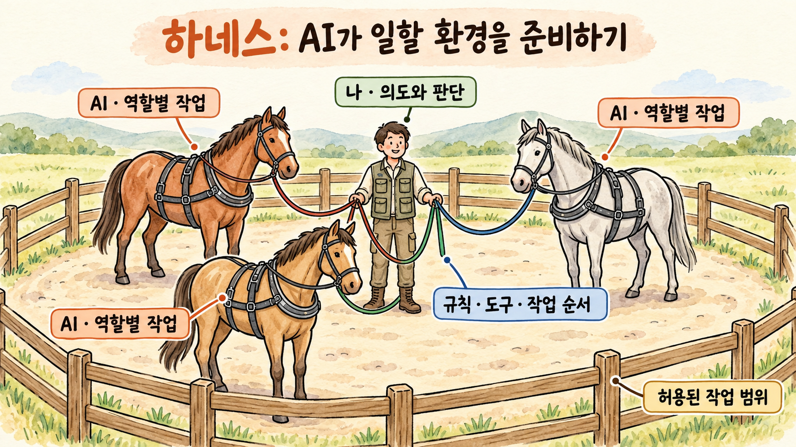
직접 실습 인터뷰로 내 규칙 정하기
텍스트 내려받기 · 05d_Claude_공통과프로젝트규칙_인터뷰.txt
내가 자주 하는 말을 앞으로 이 프로젝트의 규칙으로 남기고 싶어. 어떤 일을 하는지, 어떤 답을 원하는지 하나씩 물어봐 줘. 내가 확인하면 이 프로젝트의 CLAUDE.md에 정리해줘. 기존 규칙은 남겨줘.
초안이 맞는지 읽고 저장을 부탁합니다. 다음 작업에서 같은 말을 반복하지 않아도 기준이 반영되는지 봅니다.
참고 · 완성된 규칙 파일 모양
# CLAUDE.md ## 내 업무 - [내 역할과 반복 업무] ## 답변 방식 - 한국어로 짧게 답하고, 보고서는 건수와 총액부터 보여준다. ## 작업 규칙 - 원본은 보존하고 결과는 output에 저장한다. - 비용 계산은 제공 도구를 쓰고, 오류가 나면 멈춘다. - USD 참고액은 원화 합계에 더하지 않는다. - 확인하지 않은 것은 미확인이라고 쓴다.
심화 실습 선택 · 회사 자료로 고객 답변 초안 만들기
텍스트 내려받기 · 05c_Claude_FAQ답변초안.txt
제공된 고객 질문 3개에 답변 초안을 써줘. 한빛화학 상담 FAQ와 제품 기준표만 참고해줘. 없는 정보는 확인 필요로 남기고 출처를 적어줘. 고객에게 보내지 마.
output/customer-reply/답변초안.md를 읽습니다. 근거가 없는 답은 확인 필요로 남겨야 합니다.
Module 3
17. 보고서 절차를 Skill로 실행하기
이번에 할 일 weekly-report 스킬로 같은 보고서를 만듭니다.
회의록을 같은 양식으로 정리했듯, 보고서도 내 기준을 저장해 짧게 부릅니다. 예: “5만 원 이상 비용을 먼저 보고 싶어.”
1. 질문에 답해 내 보고 기준 정하기
텍스트 내려받기 · 05b_Claude_보고서스킬기준수정.txt
비용 보고서 스킬을 내 기준에 맞추고 싶어. 어떤 비용을 먼저 볼지 물어보고, 내가 확인하면 그 기준을 스킬에 남겨줘. 이름과 계산 방법은 그대로 둬.
답변 예: “5만 원 이상 비용을 먼저 보여줘.” 정리한 기준이 맞으면 저장을 부탁합니다. 기준을 바꿔도 전체 합계는 같아야 합니다.
직접 실습 2. 짧게 불러 보고서 만들기
텍스트 내려받기 · 05_Claude_A4_스킬실행.txt
/weekly-report 수정후 비용표로 보고서를 만들어줘. 방금 정한 기준으로 보여줘.
확인: output/skill-run/report.html과 notes/weekly-report-result.md를 엽니다. 내 기준 금액이 적용됐는지 봅니다.
스킬이 안 보이면 경로를 확인하고 같은 폴더에서 Claude를 다시 켭니다.
Module 3
18. 서브에이전트 3명 팀
이번에 할 일 한 팀을 골라 세 담당자에게 일을 나누고 결과를 확인합니다.
개념 세 담당자에게 나눠 맡기기
앞에서 본 에이전트에게 일을 나눠 맡기면 서브에이전트가 됩니다. 숫자 확인·보고서 만들기·틀린 곳 찾기, 세 담당자로 나눠 봅니다.
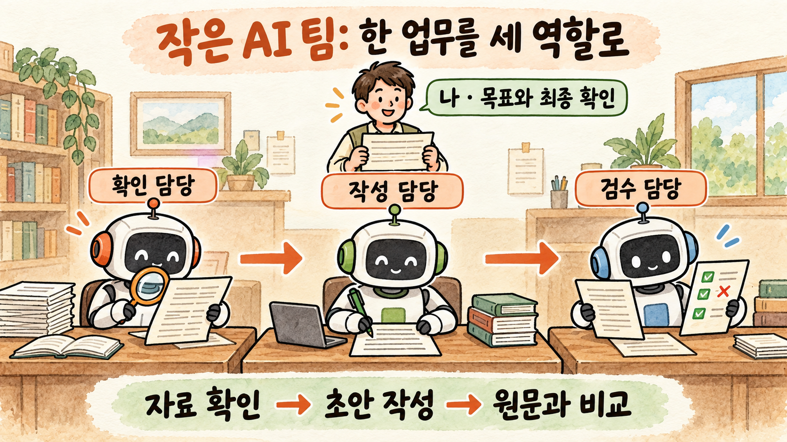
강사 시연 AI 교육회사 마케팅 팀장으로 팀 설계하기
역할을 미리 정하지 않고 Claude가 먼저 업무를 인터뷰하게 합니다. 답을 바탕으로 3~5명의 역할과 서로 결과를 넘기는 순서를 함께 정한 뒤, 승인 후 이 프로젝트 안에서만 팀을 준비합니다.
| 팀장이 정하는 것 | Claude가 제안하는 것 | 팀장이 확인하는 것 |
|---|---|---|
| 반복하는 마케팅 업무와 불편 | 담당자별 역할·자료·결과·작업 순서 | 역할이 겹치지 않는지, 결과가 맞는지 |
예를 들어 강의 홍보라면 고객 조사 → 메시지 기획 → 홍보 문안 작성 → 사실 확인처럼 이어질 수 있습니다. 실제 역할은 인터뷰 답에 맞춰 정합니다. 메인 Claude가 담당자에게 일을 나눠 주고 결과를 모으며, 마지막 판단은 팀장이 합니다.
우리 회사는 AI 교육회사이고, 나는 마케팅 팀 리드야. 나와 같이 일할 서브에이전트 팀을 만들고 싶은데, 어떤 역할이 필요한지 몇 명이 적당한지 모르겠어. 나를 인터뷰해서 같이 정해줘. 먼저 내 업무와 자주 하는 일을 한 번에 하나씩, 최대 5개까지 물어봐 줘. 내가 말하지 않은 건 추측하지 마. 답을 들은 뒤 적당한 인원(3~5명)과 역할을 추천하고, 각자 받을 자료와 넘길 결과, 함께 일하는 순서를 표로 보여줘. 왜 그 인원이 적당한지도 짧게 알려줘. 역할이 겹치거나 빠진 부분도 짚어줘. 내가 고치고 승인하기 전에는 파일을 만들지 마. 승인하면 이 프로젝트에서만 쓰도록 준비하고, 가상의 AI 교육 과정 홍보 업무로 시험해줘. 전역 설정은 건드리지 말고, 글을 밖에 올리거나 보내지 마. 마지막에 각 담당자가 한 일과 내가 확인할 점을 알려줘.
텍스트 내려받기 · 06d_Claude_마케팅팀인터뷰.txt
인터뷰가 끝나면 제안된 팀과 작업 순서를 먼저 읽습니다. 마음에 들면 승인해 프로젝트 전용으로 준비하고, 가상의 강의 홍보 업무 하나로 결과를 확인합니다. 전역 설정을 바꾸거나 외부에 게시·발송하지 않습니다.
직접 실습 마케팅 팀에 웨비나 캠페인 맡기기
팀 설계 시연 뒤 다섯 담당자가 실제로 이어 일하는지 시험합니다. mkt-researcher가 조사하고 mkt-planner가 방향을 정합니다. 그 다음 홍보 문안과 후속 안내는 서로 기다릴 필요가 없어 동시에 만들고, mkt-reviewer가 마지막에 확인합니다.
| 순서 | 담당자 | 하는 일 |
|---|---|---|
| 1 | mkt-researcher | 기업 HR 담당자의 관심사와 웨비나 신청 장벽 조사 |
| 2 | mkt-planner | 조사 결과를 바탕으로 핵심 메시지와 홍보 방향 정리 |
| 3 · 동시에 | mkt-writer + mkt-nurture | 신청 안내 문안과 신청 전후 안내 흐름 작성 |
| 4 | mkt-reviewer | 대상·메시지·사실·누락을 검토하고 수정 의견 제시 |
텍스트 내려받기 · 06e_Claude_마케팅팀_웨비나테스트.txt
마케팅 팀장으로서 mkt-researcher → mkt-planner → (mkt-writer + mkt-nurture 동시) → mkt-reviewer 순서로 진행해줘. 주제: 기업 HR 담당자 대상 "AI 업무 활용 교육" 웨비나 신청 유도 각 단계 결과를 요약해서 보여주고, 마지막 검수 결과에서 멈춰줘.
실행 전 /agents에서 다섯 이름을 확인합니다. 직접 만든 팀의 이름이 다르면 프롬프트 안의 이름만 실제 이름으로 바꿉니다. 결과를 단계별로 읽고, 마지막 검수 결과에서 멈추는지 확인합니다. 초안은 직접 살펴보고, 게시나 발송은 하지 않습니다.
서브에이전트를 나눠 쓰면 좋은 점
| 한 명에게 한꺼번에 맡기기 | 역할을 나눠 맡기기 |
|---|---|
| 간단한 일은 빠르고 편합니다. | 조사·기획·작성·검수를 각자 맡아 빠뜨린 일이 줄고, 중간 결과를 볼 수 있습니다. |
| 한 대화에서 조사부터 검수까지 모두 처리합니다. | 서로 기다릴 필요 없는 문안 작업은 동시에 하고, 앞 단계 결과가 필요한 일은 순서대로 넘깁니다. |
| 작업이 단순하면 이 방법이 충분합니다. | 여러 종류의 일이 섞였을 때 유용하지만, 역할을 나누고 결과를 확인하는 수고와 사용량이 더 듭니다. |
기억할 점: 담당자를 많이 만든다고 결과가 저절로 좋아지지는 않습니다. 누가 무엇을 받고 무엇을 넘기는지 정하고, 마지막 결과는 사람이 확인합니다.
직접 실습 내 팀 하나 고르기
비용 보고 팀은 아래 기본 경로를 사용합니다.
직접 실습 팀장 놀이 · 한 업무를 세 명에게 나누기
한 일을 확인·작성·검수로 나눠 봅니다. 마지막에는 내가 원문과 결과를 비교합니다.
| 고를 팀 하나 | 확인 담당 → 작성 담당 → 검수 담당 | 오늘 남길 결과 |
|---|---|---|
| 비용 보고 팀 · 강사 예시 | 숫자 확인 → 보고서 화면 제작 → 숫자·누락 검수 | 기존 비용 대시보드 하나 |
| 회의 정리 팀 | 원문 사실 확인 → 결정·할 일 표 작성 → 없는 담당자·날짜 검수 | 미팅 메모 한 개의 회의록 |
| 고객 후속관리 팀 | 고객표 확인 → 다음 연락 목록 작성 → 없는 약속·기한 검수 | 가상 고객 5명의 다음 행동 표 |
강사 예시: “팀장이 비용 현황을 빨리 보게 하고 싶어. 첫 담당자는 숫자를 확인하고, 둘째는 화면을 만들고, 셋째는 원본과 비교해 줘.” 내가 먼저 업무와 결과를 정하고 AI에게 역할을 맡깁니다.
팀은 하나만 만듭니다. 비용 보고 팀을 고르면 아래 기본 경로, 회의·고객 팀을 고르면 펼친 경로를 따릅니다. 두 경로를 모두 실행하지 않습니다. 세 이름이 실제 위임 기록에 나타났는지 보고, 결과를 원문과 직접 비교합니다.
회의 정리 / 고객 후속관리 팀으로 실습하기
위에서 고른 팀을 준비합니다. 첫 프롬프트로 설정하고, Claude를 다시 켠 뒤 두 번째 프롬프트로 실행합니다.
텍스트 내려받기 · 06b_Claude_고른팀_설정.txt
[회의정리 또는 고객후속관리] 팀을 만들고 싶어. @templates/team-options/사용안내.md를 보고 확인·작성·검수 담당자 세 명을 준비해줘. 기존 파일은 남기고 각자 하는 일을 알려줘. 아직 실행하지 마.
설정 뒤 같은 폴더에서 Claude를 다시 켭니다. /agents에서 선택한 팀의 세 이름을 확인한 뒤 다음 프롬프트를 보냅니다.
텍스트 내려받기 · 06c_Claude_고른팀_실행.txt
/meeting-team @input/hanbit-sales/meetings/01_외부유통사미팅.txt를 확인·작성·검수 담당자에게 나눠 맡겨줘. 각자 한 일과 완성한 파일을 짧게 알려줘.
위에서 팀을 고르면 아래 프롬프트도 그 팀에 맞게 바뀝니다. 회의 팀은 /meeting-team, 고객 팀은 /followup-team으로 부릅니다.
회의 정리: output/meeting-team/회의록.md · 고객 후속관리: output/followup-team/다음연락.md. 검수.md와 notes의 호출 기록을 봅니다. 원문에 없는 날짜·약속을 만들었으면 수정이 필요합니다. 역할 정의만 있고 실제 위임이 없으면 아직 팀으로 실행한 것이 아닙니다. 이 경로에서는 비용 팀의 화면 기준 변경 프롬프트도 건너뜁니다.
내 메인 Claude가 자료 확인·제작·검수 담당자를 순서대로 호출합니다.
| 이름 | 하는 일 | 남길 근거 |
|---|---|---|
| data-auditor | 입력·집계·원본 확인 | 숫자와 검사 결과 |
| dashboard-builder | 확인한 숫자로 HTML 제작 | 실제 출력 경로 |
| qa-reviewer | 집계와 HTML을 독립 대조 | 검사 명령·PASS/FAIL·미확인 |
직접 실습 비용 보고 팀 경로 · 1. 내 하네스 설정
앞에서 만든 비용 보고서를 팀이 이어서 사용합니다. 지금 만드는 것은 모든 프로젝트에 적용되는 전역 팀이 아니라, 이 프로젝트에서만 쓸 하네스입니다. 제공된 역할 카드로 자료 확인·화면 제작·검수 담당자의 일을 정하고, 아래 프롬프트를 Claude Code에 붙여 넣습니다.
텍스트 내려받기 · 05a_Claude_하네스설정.txt
이 보고서를 자료 확인, 화면 제작, 검수 세 명에게 나눠 맡기고 싶어. @templates/team-starter/README.md의 역할 기준으로 팀을 설정하고 각자 하는 일을 알려줘. 아직 실행하지 마.
설정이 끝나면 같은 폴더에서 Claude를 다시 켭니다. /agents에서 자료 확인·화면 제작·검수 담당자가 있는지 봅니다. 준비가 안 됐다면 실행하지 말고 Claude에게 확인을 부탁합니다.
직접 실습 2. 내 작은 팀 호출
텍스트 내려받기 · 06_Claude_A5_3명팀.txt
/team-dashboard
자료 확인 → 화면 제작 → 검수 담당자가 차례로 일했는지 봅니다. 메인 Claude에게 “세 담당자가 한 일을 짧게 알려줘”라고 부탁해도 됩니다.
직접 실습 3. 보고서를 열고 확인하기
- Claude가 알려 준 output/team-dashboard.html을 브라우저로 엽니다.
- 41건·2,363,300원인지 봅니다. 부서별 금액은 경영지원721,300원·영업586,000원·마케팅1,056,000원입니다.
- notes/team-result.md에서 세 담당자의 실제 호출과 검수 결과를 봅니다. 자동 검사는 검수 담당자가 실행합니다.
- 숫자가 맞아도 화면은 직접 눌러 봅니다. 메인이 혼자 만들었다면 3명 호출은 미확인입니다.
심화 실습 더 알아보기 · 규칙·스킬·담당자가 연결되는 방식
- CLAUDE.md의 원본 보존 규칙과 추가된 팀 호출 규칙 한 줄을 읽습니다.
- 스킬의 기준 금액과 담당자 3명의 역할을 짚어 봅니다.
- A5 팀 실행 뒤 같은 입력의 숫자와 검수 결과를 봅니다. 다음 주에는 같은 환경을 다시 사용합니다.
선택한 팀의 담당자 정의 3개는 미리 제공합니다. 내가 맡길 일을 적고 제공 역할과 비교합니다. 수업 중 정의 파일을 새로 생성하게 하지 않습니다. 한 번의 팀 실행에서 확인·제작·검수를 경험하고 다음 주 재사용은 단일 Skill로 진행합니다.
심화 실습 선택 · 기준 한 줄 바꾸고 팀 결과 비교하기
첫 팀 보고서를 확인한 뒤 같은 자료로 진행 중 비용을 먼저 보이게 바꿉니다. 담당자 정의를 다시 만들거나 역할을 늘리지 않습니다. 팀을 다시 호출하므로 추가 사용량이 듭니다.
텍스트 내려받기 · 06a_Claude_팀기준변경.txt
/team-dashboard 진행 중 비용을 먼저 보여줘. 숫자는 그대로 두고 새 결과로 남겨줘. 세 담당자가 만들고 검수해줘.
- 처음 team-dashboard.html과 새 team-followup.html을 나란히 엽니다.
- 진행 중 비용의 위치가 달라졌는지 봅니다. 총액2,363,300원·41건은 같아야 합니다.
- 새 기록에서 데이터 확인→제작→검수의 실제 결과를 봅니다. 숫자가 달라졌다면 개선 완료로 세지 않습니다.
Module 3
19. 내 Excel로 웹 보고서·슬라이드 만들기
이번에 할 일 Excel 하나로 보고서와 발표 슬라이드를 만드는 웹 도구를 만듭니다.
개념 웹 도구가 Excel 자료를 읽어 보고서와 발표 자료를 만들 수 있습니다.
직접 실습 Excel 하나 → 보고서·슬라이드
내 Excel 사본을 웹 화면에서 고르면, 같은 숫자로 보고서와 슬라이드를 만듭니다. 먼저 다음 주 실습 파일로 만들고, 내 자료는 작은 범위부터 바꿔 봅니다.
① Excel 한 개 고르기원본 대신 사본 사용
② 원하는 결과 고르기보고서 · 발표 슬라이드
③ 브라우저에서 보기같은 숫자 확인 · PDF로 저장
텍스트 내려받기 · 08_Claude_A7_실행기제작.txt
내 엑셀 하나로 보고서와 발표 슬라이드를 만드는 웹 도구를 만들고 싶어. @workbooks/주간비용_다음주.xlsx와 @workbooks/파일안내.md, @templates/excel-web-app/01_웹보고서_스펙.md를 참고해줘. 누구에게 보여 줄지 포함해서, 필요한 걸 하나씩 3개까지 물어봐 줘. 내가 확인하면 만들어서 브라우저로 열어줘. 원본은 남겨줘.
웹 화면에서 다음 주 실습 Excel을 골라 실행합니다. 보고서와 발표 슬라이드를 각각 열어 보고, 필요하면 공유 문안을 복사합니다. 서버 실행과 브라우저 열기는 Claude에게 맡깁니다.
확인: 다음 주 실습 파일은 12건·1,130,900원입니다. 보고서와 슬라이드의 숫자가 같은지 봅니다. 슬라이드는 브라우저에서 보고 인쇄·PDF로 저장합니다.
심화 실습 선택 · 폴더 선택 화면이 있는 xlreport 예시
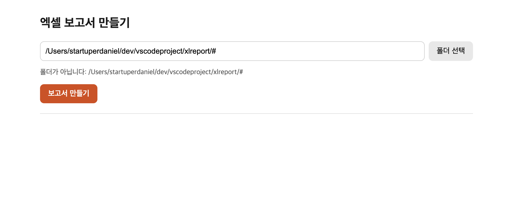
텍스트 내려받기 · 로그인된_Claude_Code로_보고서_실행기_만들기_01_참고_P98.txt
폴더를 고르고 “보고서 만들기”를 누르면 Excel을 분석하는 로컬 앱을 만들고 싶어. 로그인된 Claude Code를 쓰고, 진행 상태와 오류를 보여줘. 보고서는 선택한 폴더의 docs에 저장해줘.
텍스트 내려받기 · 로그인된_Claude_Code로_보고서_실행기_만들기_02_Claude_P99.txt
이 xlreport 프로젝트의 제공 의존성을 설치해줘. package.json과 sample/sales_fake.xlsx가 있는지 먼저 확인해줘.
텍스트 내려받기 · 로그인된_Claude_Code로_보고서_실행기_만들기_03_Claude_P100.txt
xlreport의 제공 도구로 sample 폴더의 Excel을 분석해줘. 로그인된 Claude Code를 쓰고, 결과 파일이나 오류를 알려줘. 분석은 한 번만 해줘.
텍스트 내려받기 · 로그인된_Claude_Code로_보고서_실행기_만들기_04_Claude_P101.txt
xlreport의 화면을 열어줘. 입력은 sample 폴더야. 아직 분석하지 말고 브라우저 주소와 종료 방법을 알려줘.
폴더는 “폴더 선택”으로 고릅니다. /login은 셸이 아니라 Claude 안에서 입력합니다. 종료할 때는 실행 창에서 Ctrl+C를 누릅니다.
심화 실습 Excel을 끌어 놓으면 보고서를 쓰는 나만의 로컬 도구
Excel 파일을 브라우저에 끌어 놓고 보고서 만들기를 누르면, 로컬 Node 서버가 파일을 읽고 로그인된 Claude Code CLI에 분석을 맡겨 HTML 보고서를 만듭니다. Claude Code에 로그인되어 있어야 하며, 계정 플랜·환경에 따라 사용 가능 여부가 다를 수 있습니다. 공식 CLI의 claude -p는 대화형 화면 없이 한 번 실행하는 방식입니다.
- 가상 Excel 사본 준비:
workbooks/주간비용_다음주.xlsx를 복사합니다. - 파일 넣기: 앱을 켜고 내 컴퓨터에서만 여는 주소(
127.0.0.1)에 접속한 뒤 파일 선택 또는 드래그 앤 드롭을 합니다. - 보고서 만들기: 파일 이름·행 수를 확인하고 실행 버튼을 누릅니다.
- 결과 확인: 진행 상태를 보고 브라우저 보고서에서 12건·1,130,900원인지 입력 파일과 대조합니다.
- 다른 파일도 시험: 다른 가상 사본을 넣어 각각 별도 보고서를 만들고 숫자가 섞이지 않았는지 확인합니다.
텍스트 내려받기 · Excel_드롭_로컬보고서앱.txt
로그인된 Claude Code를 이용해, Excel 파일을 브라우저에 끌어 놓으면 보고서를 만들어 주는 로컬 웹 도구를 만들고 싶어. 먼저 필요한 기능을 최대 세 가지까지 하나씩 물어봐 줘. 내가 고른 기능만 만들고, 실행 방법과 확인 방법도 알려줘.
인터뷰에서는 .xlsx만 받기, 한 번에 한 파일 처리, 건수·총액·부서별 합계 표시, 브라우저 보고서 열기를 선택해 작은 범위부터 만듭니다.
데이터 주의: 화면과 파일은 내 컴퓨터에서 다루지만, Claude가 분석할 파일 내용은 AI 서비스로 전달됩니다. 실습에는 가상 자료만 쓰고, 서버를 외부에 공개하지 않습니다. 비밀번호·API 키·실제 고객 자료를 입력하지 말고 조직의 데이터 정책과 이용 플랜을 확인합니다. 원본 Excel은 바뀌지 않게 합니다. 로그인·인증 안내 · CLI 실행 안내
Module 3
20. 파일 변경 자동 갱신
이번에 할 일 파일을 교체하면 보고서가 다시 만들어집니다.
개념 입력 파일이 바뀐 것을 알아차려 같은 보고서를 다시 만드는 기능입니다.
직접 실습 파일이 바뀌면 다시 만들기
이번에는 실행 버튼을 누르는 대신, 입력 파일이 바뀌면 보고서를 다시 만들게 합니다.
텍스트 내려받기 · 파일이_바뀌면_자동_보고서_갱신_01_Claude_P84.txt
파일을 바꾸면 보고서가 다시 나오게 켜 둬. 제공된 감시 도구를 쓰고, 파일을 바꿀 곳과 종료 방법을 알려줘.
감시는 약 1분 뒤 자동으로 끝납니다. 이미 끝났다면 “같은 감시를 다시 켜줘”라고 한 뒤 파일을 바꿉니다.
- Claude가 알려 준 첫 보고서를 엽니다.
- Claude에게 “다음 주 비용표 사본으로 감시 중인 입력을 바꿔줘. 원본은 남겨줘”라고 부탁합니다.
- 새 보고서가 만들어지면 다시 엽니다. 12건·1,130,900원으로 바뀌었는지 봅니다.
파일을 그대로 두고 다음 확인에서 skipped(변경 없음)가 나오는지 봅니다. generated는 새 보고서를 만들었다는 뜻입니다. 마칠 때는 감시 실행 창에서 Ctrl+C를 누릅니다.
Module 3
Google Drive·Gmail 연결하고 시트 공유하기
이번에 할 일 Google Drive·Gmail을 연결하고 시트와 반복 루틴을 만들어 봅니다.
개념 커넥터는 Claude Code가 Google Drive·Gmail 같은 서비스와 대화하게 해 주는 연결입니다. Drive에서 자료를 찾고, Sheets에 표를 만들고, Gmail로 링크를 보낼 수 있습니다.
직접 실습 1. Google 서비스 연결 확인하기
터미널에서 /mcp를 열어 Google Drive와 Gmail을 연결하고, Google Sheets가 보이면 함께 연결합니다.
Google Drive와 Gmail 연결 상태를 확인해줘. Google Sheets도 쓸 수 있는지 확인해줘. 연결되지 않은 서비스가 있으면 연결 방법을 알려줘. 메일은 보내지 마.
- Claude Code에서
/mcp를 입력합니다. Show unused connectors가 보이면 선택해 목록을 펼칩니다.- Google Drive와 Gmail을 선택하고, Google Sheets도 보이면 선택합니다.
- 브라우저에서 Google 계정으로 로그인한 뒤 터미널로 돌아와 연결 상태를 확인합니다.
목록에 서비스가 없으면 Claude 커넥터 설정에서 연결할 수 있는지 확인합니다. 조직 계정은 관리자가 허용해야 할 수 있습니다. 계정에 따라 화면에 보이는 서비스가 다릅니다.
직접 실습 2. 가상 재무상태표 만들고 링크 보내기
프롬프트 내려받기 · 10_가상재무상태표_GoogleSheets_P149.txt
가상 회사 자료로 시트를 만듭니다. 먼저 표의 합계를 확인하고, 메일을 보내기 전에 받는 사람과 내용을 확인합니다.
가상의 재무상태표를 Google Sheets에 만들어줘. 회사가 가진 것, 갚을 돈, 자본으로 나누고 합계가 맞는지 확인해줘. 다 만들면 방금 메일을 보낸 사람에게 링크를 보내줘. 그 메일을 찾지 못하면 누구에게 보낼지 물어봐. 보내기 전에 받는 사람과 메일 내용을 보여주고 내 확인을 기다려.
강사 시연 예시: 현금 1억원·매출채권 2천만원·재고 1천만원·유형자산 4천만원을 더하면 자산은 1억7천만원입니다. 갚을 돈 4천5백만원과 자본 1억2천5백만원을 더한 금액도 1억7천만원입니다. 수강생은 본인 시트에서 두 합계가 같은지 확인합니다.
수신자와 메일 본문을 화면에서 확인하고 승인한 뒤에만 보냅니다. 공유 권한은 시트에서 직접 확인하세요. 실습에는 실제 재무정보나 개인 계정 자료를 쓰지 않습니다.
직접 실습 3. 매일 아침 실행하는 루틴 등록하기
프롬프트 내려받기 · 11_매일재무상태표_루틴_P150.txt
한 번의 작업을 매일 반복하도록 Claude Code 루틴으로 등록합니다. 루틴은 정해 둔 일정에 클라우드에서 실행되므로 컴퓨터를 켜 둘 필요가 없습니다. 실제 발송이 시작되기 전에 파일·받는 사람·시간을 검토합니다.
매일 오전 9시에 가상의 재무상태표를 업데이트하고 링크를 이메일로 보내는 Claude Code 루틴을 만들고 싶어. 먼저 사용할 Google Drive·Sheets 파일, 받는 사람, 보낼 메일 예시, 실행 시간을 보여줘. 내가 확인하기 전에는 루틴을 켜거나 메일을 보내지 마.
Claude Code에서 /schedule을 열어 매일 오전 9시(한국 시간) 실행을 설정합니다. 가상 재무상태표를 갱신하고 정해 둔 수신자에게 링크를 보내는 흐름을 보여 줍니다. Claude가 실행 설정을 요약하면 파일·시각·메일 내용을 검토하고 승인합니다. 한 번 시험 실행한 뒤 실행 기록을 확인하고, 실습을 마칠 때는 루틴을 일시 중지합니다.
루틴은 계정의 Claude Code 웹 기능과 요금제·조직 설정에 따라 사용할 수 없을 수 있습니다. 메뉴가 없으면 강사 화면 시연을 보고 프롬프트만 작성합니다. 일정 자동 메일은 반복 발송되므로 실습용 수신자와 가상 자료만 사용하세요.
Claude Code MCP 안내 · Google Workspace 커넥터 안내 · Claude Code 루틴 안내
Module 3
21. 같은 일을 다시 해 보기
이번에 할 일 새 대화에서도 같은 작업을 실행합니다.
직접 실습 Claude 안에서 /exit로 나온 뒤, 같은 터미널에서 claude를 입력해 다시 켭니다. /weekly-report로 같은 비용표의 보고서를 한 번 더 만듭니다. 파일 이름과 부탁했던 말을 남겨두면 다음에도 쓸 수 있습니다.
웹 도구도 만들었다면 다시 열어 같은 Excel로 보고서와 슬라이드를 만들어 봅니다.
확인: 같은 입력이면 건수와 합계가 같습니다. 막히면 그 문장만 고쳐 기록합니다.
Module 3
22. 내 작품 확인과 짧은 시연
이번에 할 일 내 결과와 확인한 내용을 보여줍니다.
직접 실습 내가 만든 것 중 하나를 열어 보여줍니다.
- 체크리스트: 추가 → 완료 → 새로고침.
- 회의록 스킬: 다른 메모에도 같은 형식으로 정리.
- 비용 보고서: 원본과 건수·총액 비교.
잘 되는 부분과 아직 고칠 부분을 한 문장씩 적습니다.
Module 3
23. 제출하고 다음 사용 정하기
이번에 할 일 내 결과와 다음에 할 일을 기록합니다.
처음 적은 업무에서 무엇을 줄일 수 있을까요? 다음에 해 볼 작은 작업 하나를 남깁니다.
R8-1 설문과 산출물 제출
기록을 내려받아 안내된 제출 채널로 전달합니다.
입력한 메모를 Markdown 파일로 저장합니다.
심화 실습 더 알아보기 · AI가 브라우저를 검사하는 방법
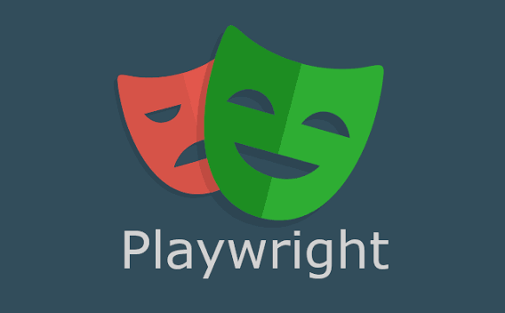
E2E는 사용자가 처음부터 끝까지 하는 동작을 검사하는 방법입니다. Playwright는 브라우저를 대신 눌러 이를 검사하는 도구입니다. 오늘은 소개만 합니다. 회사망에서는 설치가 제한될 수 있습니다.
오늘 남길 것: 체크리스트, 회의록·비용 보고서 스킬, CLAUDE.md, 3명 팀 결과, Excel 웹 도구, 자동 갱신 확인, Gmail 초안. 아직 안 된 단계는 메모에 적습니다.
필요할 때 참고
오늘 내용 확인
실습을 마친 뒤 스스로 떠올려 보는 세 가지입니다. 먼저 답을 고르고 이유를 설명한 뒤 해설을 펼칩니다.
필요할 때 참고
막혔을 때, 여기서 합류합니다
이번에 할 일 막힌 부분 하나를 찾아 도움을 구합니다.
오류 메시지와 방금 하던 일을 함께 알려주세요. 전체 대화를 다시 설명할 필요는 없습니다.
- claude를 찾을 수 없음: 터미널을 새로 열고 다시 해 봅니다.
- 폴더를 찾을 수 없음: 압축을 푼 실제 경로인지 확인합니다.
- 로그인 오류: Claude 안에서 /login을 실행합니다.
- 스킬이 안 보임: 같은 실습 폴더에서 Claude를 다시 켭니다.
강사 참고 · grill-me 시연과 계획 양식
grill-me는 질문으로 만들 기능을 정하는 스킬입니다. 예: 마감일 넣기, 장소 메모 남기기.
강사 준비 · 제공 스킬 설치
아래 전체 내용을 Claude에 붙여 넣습니다. 저장 후 같은 폴더에서 Claude를 다시 켭니다.
텍스트 내려받기 · 02a_Claude_스킬내용복붙설치.txt
아래 내용을 프로젝트용 grill-me 스킬로 설치해줘. 기존 스킬이 다르면 먼저 물어봐 줘. 제공 자료의 LICENSE와 SOURCE.md도 함께 복사해줘. 아직 인터뷰하지 마. SKILL.md 내용: --- name: grill-me description: 만들고 싶은 개인 도구나 추가 기능을 짧게 인터뷰하고, 확인한 계획과 구현 프롬프트를 정리한다. 무엇을 입력하고 어떤 결과를 볼지 아직 모호할 때 사용한다. disable-model-invocation: true --- # 내 도구를 정하는 짧은 인터뷰 · 교육용 Matt Pocock의 grill-me/grilling에서 질문으로 계획을 구체화하는 방식을 참고한 수업용 버전이다. 원본과 달리 다른 스킬 없이 실행하며, 8H 개인 실습 범위에서 인터뷰를 끝낸다. 사용자의 프롬프트: $ARGUMENTS ## 질문과 종료 - 한국어로 쉬운 질문을 한 번에 하나씩 하고 답을 기다린다. 이미 알려 준 내용은 다시 묻지 않는다. 최대 3개 질문으로 필요한 내용을 정한다. - 누가 언제 쓰는지, 남기고 싶은 정보와 입력 방법, 보고 싶은 결과와 추가 기능을 답에서 구체화한다. 장소 이름은 예시이며 특정 항목이나 앱으로 제한하지 않는다. - 질문에는 추천 선택지와 자유롭게 답할 여지를 준다. 최종 선택은 사용자가 한다. 기능은 최대 3개, 화면은 1개로 줄이고 나머지는 다음 개선으로 남긴다. - 이 실습은 HTML 한 파일, 외부 라이브러리·API·서버·로그인 없는 범위다. 범위를 넘는 기능은 구현 가능한 작은 대안을 함께 제안하고 선택을 기다린다. - 사용 동작으로 확인할 기준을 정한다. 예: 두 건 입력 → 한 건 완료 → 새로고침 후 저장 확인. 실행하지 않은 검사는 미확인이다. - 질문 뒤 확정한 내용과 남은 선택을 요약하고 사용자 확인을 기다린다. 3개 질문 뒤에도 중요한 선택이 남으면 추측하지 말고 그 선택을 표시한다. 사용자가 더 묻기를 원하면 추가 질문 횟수를 기록한다. ## 확인 후 남길 두 파일 사용자가 계획을 확인하면 다음 파일만 작성한다. 아직 앱을 구현하지 않는다. 같은 이름이 있으면 보존하고 새 파일명을 안내한다. 1. `notes/내도구_인터뷰.md`: 사용자 답, 확정 기능, 다음 개선, 직접 검사 기준. `templates/planning/01_내도구_빈칸템플릿.md`의 PRD 4칸·IA 3칸·사용 여정 3칸에 맞춰 확인한 계획을 정리한다. 모르는 내용은 미정으로 표시한다. 2. `notes/내도구_구현요청.txt`: 그 계획을 포함한 복사 가능한 구현 프롬프트. 기존 파일 보존과 새 HTML 파일명 안내, 기능 최대 3개·화면 1개, 브라우저 localStorage 저장과 저장 실패 안내, 입력 텍스트를 HTML로 실행하지 않기, 실제 검사와 미확인 구분을 포함한다. 계획은 사용자가 확인했다는 표현을 쓴다. 끝에는 실제 파일명과 남은 선택만 짧게 안내한다. 사용자가 내용을 읽고 구현 프롬프트를 따로 붙여 넣어야 구현을 시작한다.
2. 질문에 답하기
텍스트 내려받기 · 03_Claude_G1_기능인터뷰.txt
/grill-me 체크리스트에 [추가하고 싶은 기능]을 넣고 싶어. 하나씩 질문해서 기능을 정하고, 내 확인 뒤 계획과 구현 프롬프트를 파일로 남겨줘. 아직 만들지는 마.
확인한 계획은 notes/내도구_인터뷰.md와 notes/내도구_구현요청.txt에 남습니다.
텍스트 내려받기 · 04_Claude_A3_확인한계획구현.txt
방금 인터뷰에서 정한 계획대로 만들어줘. 기존 체크리스트는 남기고, 동작을 확인한 뒤 새 파일을 여는 방법을 알려줘.
새 HTML을 열어 추가한 기능을 확인합니다. 기존 index.html은 그대로 남깁니다.
선택 · 계획을 직접 적고 싶다면
MY FIRST TOOL
0 / 10 작성내 도구, 한 장으로 계획하기
예시를 읽고 직접 작성하세요. 모든 칸을 채웁니다.
01만들기 약속PRD0/4
누구의 불편을, 어떤 작은 기능으로 해결할까요?
예시로 감 잡기
- 도구 이름: 금요일 비용 마감 체크리스트
- 누가, 언제, 무엇이 불편한가요?: 비용 담당자인 내가 금요일마다 정리·보고 준비를 빠뜨립니다.
- 꼭 할 기능 · 한 줄에 하나, 최대 3개: 마감할 일 추가 / 끝낸 일 체크 / 새로고침 뒤 목록 유지
- 잘 만들어졌는지 직접 확인할 방법: 2개 추가 → 1개 완료 → 새로고침 → 2개와 완료 표시 유지
02서랍 지도IA0/3
소개·입력·결과에 들어갈 정보만 적어 보세요.
예시로 감 잡기
- 소개 묶음 · 무엇을 알려주나요?: 도구 이름과 “금요일 마감 준비를 확인하세요” 안내
- 입력 묶음 · 무엇을 적거나 누르나요?: 마감할 일 입력칸과 추가 버튼
- 결과 묶음 · 무엇을 보나요?: 마감 목록과 완료 체크
03사용 이야기User Journey0/3
시작·사용·끝에서 사람의 행동과 마음을 적어 보세요.
예시로 감 잡기
- 시작 · 상황과 마음: 금요일 마감 전 도구를 연다. “또 빠뜨릴까 걱정돼.”
- 사용 · 행동과 마음: 정리·보고할 일 2개를 적고 끝낸 것에 체크한다. “차례대로 하면 되겠네.”
- 끝 · 결과와 마음: 남은 일을 확인하고 마감을 준비한다. “이제 안심!”
내가 적은 내용을 소리 내어 읽어 보세요.
누구에게 필요한지, 기능은 3개 이하인지, 직접 확인할 수 있는지.
작성한 내용은 이 브라우저에 저장됩니다.
이제 Claude에게 맡겨 볼까요?
내가 작성한 내용에 작은 도구 제작 프롬프트를 붙였습니다.
AI에게 전달할 전체 내용 확인
계획 조립에는 AI를 호출하지 않습니다. 복사한 내용을 Claude Code에 한 번 붙여 넣으세요.